library(tidyverse)
library(beyonce)
library(patchwork)
library(brms)
library(tidybayes)
library(bayesplot)17 Metric Predicted Variable with One Metric Predictor
We will initially describe the relationship between the predicted variable, \(y\) and predictor, \(x\), with a simple linear model and normally distributed residual randomness in \(y\). This model is often referred to as ‘simple linear regression.’ We will generalize the model in three ways. First, we will give it a noise distribution that accommodates outliers, which is to say that we will replace the normal distribution with a \(t\) distribution as we did in the previous chapter. The model will be implemented in [brms]. Next, we will consider differently shaped relations between the predictor and the predicted, such as quadratic trend. Finally, we will consider hierarchical models of situations in which every individual has data that can be described by an individual trend, and we also want to estimate group-level typical trends across individuals. (Kruschke, 2015, p. 478)
17.1 Simple linear regression
Load the primary packages for this chapter.
It wasn’t entirely clear how Kruschke simulated the bimodal data on the right panel of Figure 17.1. I figured an even split of two Gaussians would suffice and just sighted their \(\mu\)’s and \(\sigma\)’s.
# How many draws per panel would you like?
n_draw <- 1000
set.seed(17)
d <- tibble(panel = rep(letters[1:2], each = n_draw),
x = c(runif(n = n_draw, min = -10, max = 10),
rnorm(n = n_draw / 2, mean = -7, sd = 2),
rnorm(n = n_draw / 2, mean = 3, sd = 2))) |>
mutate(y = 10 + 2 * x + rnorm(n = n_draw, mean = 0, sd = 2))
head(d)# A tibble: 6 × 3
panel x y
<chr> <dbl> <dbl>
1 a -6.90 -4.09
2 a 9.37 28.6
3 a -0.635 11.8
4 a 5.54 23.3
5 a -1.84 10.9
6 a 0.776 10.9 In case you missed it, Kruschke defied the formula for these data in Figure 17.1. It is
\[\begin{align*} y_i & \sim \operatorname{Normal}(\mu_i, \sigma = 2), \text{where} \\ \mu_i & = 10 + 2 x_i. \end{align*}\]
“Note that the model only specifies the dependency of \(y\) on \(x\). The model does not say anything about what generates \(x\), and there is no probability distribution assumed for describing \(x\)” (p. 479). Let this sink into your soul. It took a long time, for me. E.g., a lot of people fret over the distributions of their \(x\) variables. Now one might should examine them to make sure nothing looks off, such as for data coding mistakes. But if they’re not perfectly or even approximately Gaussian, that isn’t necessarily an issue. The typical linear model makes no presumption about the distribution of the predictors. Often times, the largest issue is whether the \(x\) variables are categorical or continuous.
Before we make our Figure 17.1, we’ll want to make a separate tibble of the values necessary to plot those sideways Gaussians. Here are the steps.
# Define the 3 x-values we want the Gaussians to originate from
curves <- tibble(x = seq(from = -7.5, to = 7.5, length.out = 4)) |>
# Use the formula 10 + 2x to compute the expected y-value for `x`
mutate(y_mean = 10 + (2 * x)) |>
# Based on a Gaussian with `mean = y_mean` and `sd = 2`, compute the 99% intervals
mutate(ll = qnorm(p = 0.005, mean = y_mean, sd = 2),
ul = qnorm(p = 0.995, mean = y_mean, sd = 2)) |>
# Now use those interval bounds to make a sequence of `y` values
mutate(y = map2(.x = ll, .y = ul,
.f = \(ll, ul) seq(from = ll, to = ul, length.out = 100))) |>
# Since that operation returned a nested column, we need to `unnest()`
unnest(y) |>
# Compute the density values
mutate(density = map2_dbl(.x = y, .y = y_mean,
.f = \(y, y_mean) dnorm(x = y, mean = y_mean, sd = 2))) |>
# Now rescale the density values to be wider. Since we want these to
# be our `x` values, we'll just redefine the `x` column with these results
mutate(x = x - density * 2 / max(density))
str(curves)tibble [400 × 6] (S3: tbl_df/tbl/data.frame)
$ x : num [1:400] -7.57 -7.58 -7.59 -7.61 -7.62 ...
$ y_mean : num [1:400] -5 -5 -5 -5 -5 -5 -5 -5 -5 -5 ...
$ ll : num [1:400] -10.2 -10.2 -10.2 -10.2 -10.2 ...
$ ul : num [1:400] 0.152 0.152 0.152 0.152 0.152 ...
$ y : num [1:400] -10.15 -10.05 -9.94 -9.84 -9.74 ...
$ density: num [1:400] 0.00723 0.00826 0.0094 0.01068 0.01209 ...Before we make Figure 17.1, let’s talk color. Like last chapter, we’ll take our color palette from the beyonce package. Our palette will be a nine-point version of #41.
bp <- beyonce_palette(41, n = 9, type = "continuous")
bpThe global theme will be ggplot2::theme_linedraw() with the grid lines removed. Make Figure 17.1.
theme_set(
theme_linedraw() +
theme(panel.grid = element_blank())
)
d |>
ggplot(aes(x = x, y = y)) +
geom_vline(xintercept = 0, color = bp[9], linetype = 2, linewidth = 1/3) +
geom_hline(yintercept = 0, color = bp[9], linetype = 2, linewidth = 1/3) +
geom_point(alpha = 1/3, color = bp[5], size = 1/3) +
stat_smooth(method = "lm", formula = 'y ~ x', fullrange = TRUE, se = FALSE, color = bp[1]) +
geom_path(data = curves,
aes(group = y_mean),
color = bp[2], linewidth = 1) +
labs(title = "Normal PDF around Linear Function",
subtitle = "We simulated x from a uniform distribution in the left panel and simulated it from a mixture of\n two Gaussians on the right.") +
coord_cartesian(xlim = c(-10, 10),
ylim = c(-10, 30)) +
theme(strip.background = element_blank(),
strip.text = element_blank()) +
facet_wrap(~ panel)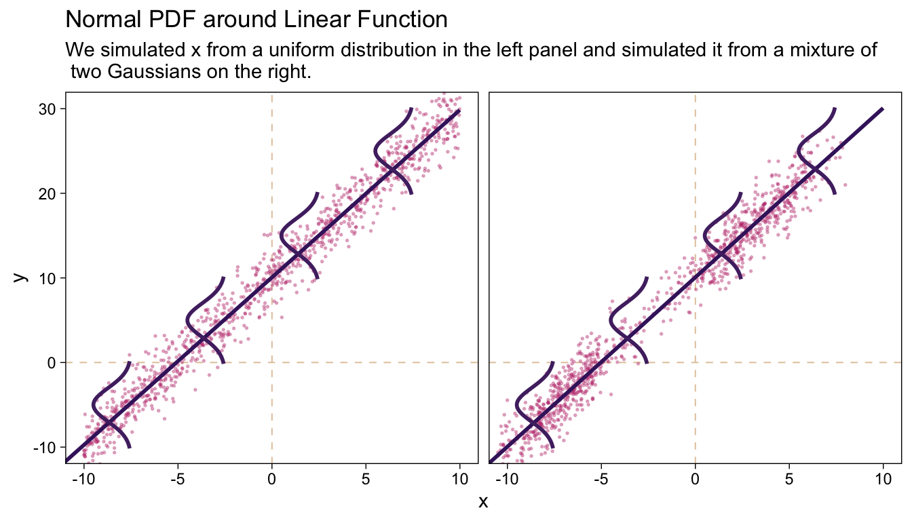
Concerning causality,
the simple linear model makes no claims about causal connections between \(x\) and \(y\). The simple linear model merely describes a tendency for \(y\) values to be linearly related to \(x\) values, hence “predictable” from the \(x\) values. When describing data with this model, we are starting with a scatter plot of points generated by an unknown process in the real world, and estimating parameter values that would produce a smattering of points that might mimic the real data. Even if the descriptive model mimics the data well (and it might not), the mathematical “process” in the model may have little if anything to do with the real-world process that created the data. Nevertheless, the parameters in the descriptive model are meaningful because they describe tendencies in the data. (p. 479, emphasis added)
I emphasized these points because I’ve heard and seen a lot of academics conflate linear regression models with causal models. For sure, it might well be preferable if your regression model was also a causal model. But good old prediction is fine, too.
17.2 Robust linear regression
There is no requirement to use a normal distribution for the noise distribution. The normal distribution is traditional because of its relative simplicity in mathematical derivations. But real data may have outliers, and the use of (optionally) heavy-tailed noise distributions is straight forward in contemporary Bayesian software[, like brms]. (pp. 479–480)
Let’s make our version of the model diagram in Figure 17.2 to get a sense of where we’re going.
# Normal density
p1 <- tibble(x = seq(from = -3, to = 3, by = 0.1)) |>
ggplot(aes(x = x, y = (dnorm(x)) / max(dnorm(x)))) +
geom_area(fill = bp[6]) +
annotate(geom = "text",
x = 0, y = 0.2,
label = "normal",
color = bp[1], size = 7) +
annotate(geom = "text",
x = c(0, 1.5), y = 0.6,
label = c("italic(M)[0]", "italic(S)[0]"),
color = bp[1], family = "Times", parse = TRUE, size = 7) +
scale_x_continuous(expand = c(0, 0)) +
theme_void() +
theme(axis.line.x = element_line(color = bp[1], linewidth = 0.5))
# A second normal density
p2 <- tibble(x = seq(from = -3, to = 3, by = 0.1)) |>
ggplot(aes(x = x, y = (dnorm(x)) / max(dnorm(x)))) +
geom_area(fill = bp[6]) +
annotate(geom = "text",
x = 0, y = 0.2,
label = "normal",
color = bp[1], size = 7) +
annotate(geom = "text",
x = c(0, 1.5), y = 0.6,
label = c("italic(M)[1]", "italic(S)[1]"),
color = bp[1], family = "Times", parse = TRUE, size = 7) +
scale_x_continuous(expand = c(0, 0)) +
theme_void() +
theme(axis.line.x = element_line(color = bp[1], linewidth = 0.5))
## Two annotated arrows
# Save our custom arrow settings
my_arrow <- arrow(angle = 20, length = unit(0.35, "cm"), type = "closed")
p3 <- tibble(x = c(0.33, 1.67),
y = c(1, 1),
xend = c(0.75, 1.1),
yend = c(0, 0)) |>
ggplot(aes(x = x, xend = xend,
y = y, yend = yend)) +
geom_segment(arrow = my_arrow, color = bp[1]) +
annotate(geom = "text",
x = c(0.4, 1.25), y = 0.5,
label = "'~'",
color = bp[1], family = "Times", parse = TRUE, size = 10) +
xlim(0, 2) +
theme_void()
# Exponential density
p4 <- tibble(x = seq(from = 0, to = 1, by = 0.01)) |>
ggplot(aes(x = x, y = (dexp(x, 2) / max(dexp(x, 2))))) +
geom_area(fill = bp[6]) +
annotate(geom = "text",
x = 0.5, y = 0.2,
label = "exp",
color = bp[1], size = 7) +
annotate(geom = "text",
x = 0.5, y = 0.6,
label = "italic(K)",
color = bp[1], family = "Times", parse = TRUE, size = 7) +
scale_x_continuous(expand = c(0, 0)) +
theme_void() +
theme(axis.line.x = element_line(color = bp[1], linewidth = 0.5))
# Likelihood formula
p5 <- tibble(x = 0.5,
y = 0.25,
label = "beta[0]+beta[1]*italic(x)[italic(i)]") |>
ggplot(aes(x = x, y = y, label = label)) +
geom_text(color = bp[1], family = "Times", parse = TRUE, size = 7) +
scale_x_continuous(expand = c(0, 0), limits = c(0, 1)) +
ylim(0, 1) +
theme_void()
# Half-normal density
p6 <- tibble(x = seq(from = 0, to = 3, by = 0.01)) |>
ggplot(aes(x = x, y = (dnorm(x)) / max(dnorm(x)))) +
geom_area(fill = bp[6]) +
annotate(geom = "text",
x = 1.5, y = 0.2,
label = "half-normal",
color = bp[1], size = 7) +
annotate(geom = "text",
x = 1.5, y = 0.6,
label = "0*','*~italic(S)[sigma]",
color = bp[1], family = "Times", parse = TRUE, size = 7) +
scale_x_continuous(expand = c(0, 0)) +
theme_void() +
theme(axis.line.x = element_line(color = bp[1], linewidth = 0.5))
# Four annotated arrows
p7 <- tibble(x = c(0.43, 0.43, 1.5, 2.5),
y = c(1, 0.55, 1, 1),
xend = c(0.43, 1.225, 1.5, 1.75),
yend = c(0.8, 0.15, 0.2, 0.2)) |>
ggplot(aes(x = x, xend = xend,
y = y, yend = yend)) +
geom_segment(arrow = my_arrow, color = bp[1]) +
annotate(geom = "text",
x = c(0.3, 0.7, 1.38, 2), y = c(0.92, 0.22, 0.65, 0.6),
label = c("'~'", "'='", "'='", "'~'"),
color = bp[1], family = "Times", parse = TRUE, size = 10) +
annotate(geom = "text",
x = 0.43, y = 0.7,
label = "nu*minute+1",
color = bp[1], family = "Times", parse = TRUE, size = 7) +
xlim(0, 3) +
theme_void()
# Student-t density
p8 <- tibble(x = seq(from = -3, to = 3, by = 0.1)) |>
ggplot(aes(x = x, y = (dt(x, 3) / max(dt(x, 3))))) +
geom_area(fill = bp[6]) +
annotate(geom = "text",
x = 0, y = 0.2,
label = "student t",
color = bp[1], size = 7) +
annotate(geom = "text",
x = 0, y = 0.6,
label = "nu~~~mu[italic(i)]~~~sigma",
color = bp[1], family = "Times", parse = TRUE, size = 7) +
scale_x_continuous(expand = c(0, 0)) +
theme_void() +
theme(axis.line.x = element_line(color = bp[1], linewidth = 0.5))
# The final annotated arrow
p9 <- tibble(x = c(0.375, 0.625),
y = c(1/3, 1/3),
label = c("'~'", "italic(i)")) |>
ggplot(aes(x = x, y = y, label = label)) +
geom_text(color = bp[1], family = "Times", parse = TRUE, size = c(10, 7)) +
geom_segment(x = 0.5, xend = 0.5,
y = 1, yend = 0,
arrow = my_arrow, color = bp[1]) +
xlim(0, 1) +
theme_void()
# Some text
p10 <- tibble(x = 0.5,
y = 0.5,
label = "italic(y[i])") |>
ggplot(aes(x = x, y = y, label = label)) +
geom_text(color = bp[1], family = "Times", parse = TRUE, size = 7) +
xlim(0, 1) +
theme_void()
# Define the layout
layout <- c(
area(t = 1, b = 2, l = 3, r = 5),
area(t = 1, b = 2, l = 7, r = 9),
area(t = 4, b = 5, l = 1, r = 3),
area(t = 4, b = 5, l = 5, r = 7),
area(t = 4, b = 5, l = 9, r = 11),
area(t = 3, b = 4, l = 3, r = 9),
area(t = 7, b = 8, l = 5, r = 7),
area(t = 6, b = 7, l = 1, r = 11),
area(t = 9, b = 9, l = 5, r = 7),
area(t = 10, b = 10, l = 5, r = 7))
# Combine and plot!
(p1 + p2 + p4 + p5 + p6 + p3 + p8 + p7 + p9 + p10) +
plot_layout(design = layout) &
ylim(0, 1) &
theme(plot.margin = margin(0, 5.5, 0, 5.5))As introduced in Section 2.3, here’s the code for the height_weight_generator() function.
height_weight_generator <- function(n, male_prob = 0.5, seed = 47405) {
# Male MVN distribution parameters
height_male_mu <- 69.18; height_male_sd <- 2.87
log_weight_male_mu <- 5.14; log_weight_male_sd <- 0.17
male_rho <- 0.42
male_mean <- c(height_male_mu, log_weight_male_mu)
male_sigma <- matrix(c(height_male_sd^2, male_rho * height_male_sd * log_weight_male_sd,
male_rho * height_male_sd * log_weight_male_sd, log_weight_male_sd^2),
nrow = 2)
# Female cluster 1 MVN distribution parameters
height_female_mu_1 <- 63.11; height_female_sd_1 <- 2.76
log_weight_female_mu_1 <- 5.06; log_weight_female_sd_1 <- 0.24
female_rho_1 <- 0.41
female_mean_1 <- c(height_female_mu_1, log_weight_female_mu_1)
female_sigma_1 <- matrix(c(height_female_sd_1^2, female_rho_1 * height_female_sd_1 * log_weight_female_sd_1,
female_rho_1 * height_female_sd_1 * log_weight_female_sd_1, log_weight_female_sd_1^2),
nrow = 2)
# Female cluster 2 MVN distribution parameters
height_female_mu_2 <- 64.36; height_female_sd_2 <- 2.49
log_weight_female_mu_2 <- 4.86; log_weight_female_sd_2 <- 0.14
female_rho_2 <- 0.44
female_mean_2 <- c(height_female_mu_2, log_weight_female_mu_2)
female_sigma_2 <- matrix(c(height_female_sd_2^2, female_rho_2 * height_female_sd_2 * log_weight_female_sd_2,
female_rho_2 * height_female_sd_2 * log_weight_female_sd_2, log_weight_female_sd_2^2),
nrow = 2)
# Female cluster probabilities
female_prob_1 <- 0.46
female_prob_2 <- 1 - female_prob_1
# Randomly generate data values from those MVN distributions
if (!is.null(seed)) set.seed(seed)
datamatrix <- matrix(0, nrow = n, ncol = 3)
colnames(datamatrix) <- c("male", "height", "weight")
male_val <- 1; female_val <- 0 # Arbitrary coding values
for (i in 1:n) {
# Generate `sex`
sex <- sample(c(male_val, female_val), size = 1, replace = TRUE, prob = c(male_prob, 1 - male_prob))
if (sex == male_val) datum <- MASS::mvrnorm(n = 1, mu = male_mean, Sigma = male_sigma)
if (sex == female_val) {
female_cluster <- sample(c(1, 2), size = 1, replace = TRUE, prob = c(female_prob_1, female_prob_2))
if (female_cluster == 1) datum <- MASS::mvrnorm(n = 1, mu = female_mean_1, Sigma = female_sigma_1)
if (female_cluster == 2) datum <- MASS::mvrnorm(n = 1, mu = female_mean_2, Sigma = female_sigma_2)
}
datamatrix[i, ] <- c(sex, round(c(datum[1], exp(datum[2])), digits = 1))
}
data.frame(datamatrix)
}Let’s take this baby for a spin to simulate our data.
d <- height_weight_generator(n = 300, male_prob = 0.50, seed = 17) |>
# This will allow us to subset 30 of the values into their own group
mutate(subset = rep(0:1, times = c(9, 1)) |> rep(times = 30))
head(d) male height weight subset
1 0 63.3 167.1 0
2 0 62.4 125.6 0
3 1 66.4 124.0 0
4 0 62.9 147.5 0
5 1 65.5 151.1 0
6 1 71.4 234.5 0Note how we set the seed for the the pseudorandom number generator with the seed argument, which makes the results in this ebook reproducible. But since we do not know what seed value Kruschke used to simulate the data in this section of the test, the results of our models in the next section will differ a little from those in the text. However, if you want to more closely reproduce Kruschke’s examples, load the HtWtData30.csv and HtWtData300.csv data files and fit the models to those, instead.
Anyway,
fortunately, we do not have to worry much about analytical derivations because we can let JAGS or Stan generate a high resolution picture of the posterior distribution. Our job, therefore, is to specify sensible priors and to make sure that the MCMC process generates a trustworthy posterior sample that is converged and well mixed. (p. 483)
17.2.1 Robust linear regression in JAGS brms.
Presuming a data set with a sole standardized predictor x_z for a sole standardized criterion y_z, the basic brms code corresponding to the JAGS code Kruschke showed on page 483 looks like this.
fit <- brm(
data = my_data,
family = student,
y_z ~ 1 + x_z,
prior = c(prior(normal(0, 10), class = Intercept),
prior(normal(0, 10), class = b),
prior(normal(0, 1), class = sigma),
prior(exponential(one_over_twentynine), class = nu)),
stanvars = stanvar(1/29, name = "one_over_twentynine"))Like we discussed in Chapter 16, we won’t be using the uniform prior for \(\sigma\). Since we’re presuming standardized data, a half-unit normal is a fine choice. But do note this is much tighter than Kruschke’s \(\operatorname{Uniform}(0.001, 1000)\) and it will have down-the-road consequences for our results versus those in the text.
Also, look at how we just pumped the definition of our sole stanvar(1/29, name = "one_over_twentynine") operation right into the stanvar argument. If we were defining multiple values this way, I’d prefer to save this as an object first and then just pump that object into stanvars. But in this case, it was simple enough to just throw directly into the brm() function.
17.2.1.1 Standardizing the data for MCMC sampling.
“Standardizing simply means re-scaling the data relative to their mean and standard deviation” (p. 485). For any variable \(x\), that follows the formula
\[z_i = \frac{x_i - \bar x}{s},\]
where \(x_i\) is the \(i\)th row in the vector of \(x\) values, \(\bar x\) is the sample mean for \(x\), \(s\) is the sample standard deviation for \(x\), and the product of the standardizing procedure is \(z_i\) (i.e., the \(z\)-score).
Kruschke mentioned how standardizing your data before feeding it into JAGS often helps the algorithm operate smoothly. The same basic principle holds for brms and Stan. Stan can often handle unstandardized data just fine. But if you ever run into estimation difficulties, consider standardizing your data and trying again.
We’ll make a simple function to standardize the height and weight values.
standardize <- function(x) {
(x - mean(x)) / sd(x)
}
d <- d |>
mutate(height_z = standardize(height),
weight_z = standardize(weight))Somewhat analogous to how Kruschke standardized his data within the JAGS code, you could standardize the data within the brm() function. That would look something like this.
fit <- brm(
data = d |> # The standardizing occurs in the next two lines
mutate(height_z = standardize(height),
weight_z = standardize(weight)),
family = student,
weight_z ~ 1 + height_z)We’ll fit the two models at once. fit1 will be of the total data sample. fit2 is of the \(n = 30\) subset.
fit17.1 <- brm(
data = d,
family = student,
weight_z ~ 1 + height_z,
prior = c(prior(normal(0, 10), class = Intercept),
prior(normal(0, 10), class = b),
prior(normal(0, 1), class = sigma),
prior(exponential(one_over_twentynine), class = nu)),
chains = 4, cores = 4,
stanvars = stanvar(1/29, name = "one_over_twentynine"),
seed = 17,
file = "fits/fit17.01")
fit17.2 <- update(
fit17.1,
newdata = d |>
filter(subset == 1),
chains = 4, cores = 4,
seed = 17,
file = "fits/fit17.02")Here are the results.
print(fit17.1) Family: student
Links: mu = identity; sigma = identity; nu = identity
Formula: weight_z ~ 1 + height_z
Data: d (Number of observations: 300)
Draws: 4 chains, each with iter = 2000; warmup = 1000; thin = 1;
total post-warmup draws = 4000
Regression Coefficients:
Estimate Est.Error l-95% CI u-95% CI Rhat Bulk_ESS Tail_ESS
Intercept -0.03 0.05 -0.13 0.08 1.00 3630 2858
height_z 0.45 0.05 0.35 0.56 1.00 3947 2904
Further Distributional Parameters:
Estimate Est.Error l-95% CI u-95% CI Rhat Bulk_ESS Tail_ESS
sigma 0.84 0.05 0.75 0.94 1.00 3029 2712
nu 25.50 21.42 6.33 87.47 1.00 2768 2968
Draws were sampled using sampling(NUTS). For each parameter, Bulk_ESS
and Tail_ESS are effective sample size measures, and Rhat is the potential
scale reduction factor on split chains (at convergence, Rhat = 1).print(fit17.2) Family: student
Links: mu = identity; sigma = identity; nu = identity
Formula: weight_z ~ 1 + height_z
Data: filter(d, subset == 1) (Number of observations: 30)
Draws: 4 chains, each with iter = 2000; warmup = 1000; thin = 1;
total post-warmup draws = 4000
Regression Coefficients:
Estimate Est.Error l-95% CI u-95% CI Rhat Bulk_ESS Tail_ESS
Intercept -0.12 0.12 -0.35 0.13 1.00 3652 2594
height_z 0.61 0.11 0.40 0.82 1.00 4186 2740
Further Distributional Parameters:
Estimate Est.Error l-95% CI u-95% CI Rhat Bulk_ESS Tail_ESS
sigma 0.64 0.09 0.48 0.85 1.00 3479 2847
nu 39.63 30.86 5.53 122.99 1.00 3713 2517
Draws were sampled using sampling(NUTS). For each parameter, Bulk_ESS
and Tail_ESS are effective sample size measures, and Rhat is the potential
scale reduction factor on split chains (at convergence, Rhat = 1).Based on Kruschke’s Equation 17.2, we can convert the standardized coefficients back to their original metric using the formulas
\[\begin{align*} \beta_0 & = \zeta_0 \operatorname{SD}_y + M_y - \frac{\zeta_1 M_x \operatorname{SD}_y}{\operatorname{SD}_x} \;\; \text{and} \\ \beta_1 & = \frac{\zeta_1 \operatorname{SD}_y}{\operatorname{SD}_x}, \end{align*}\]
where \(\zeta_0\) and \(\zeta_1\) denote the intercept and slope for the model of the standardized data, respectively, and that model follows the familiar form
\[z_{\hat y} = \zeta_0 + \zeta_1 z_x.\]
To implement those equations, we’ll first extract the posterior draws. We begin with fit17.1, the model for which \(N = 300\).
draws <- as_draws_df(fit17.1)
head(draws)# A draws_df: 6 iterations, 1 chains, and 7 variables
b_Intercept b_height_z sigma nu Intercept lprior lp__
1 -0.0869 0.46 0.84 24.5 -0.0869 -11 -401
2 -0.0623 0.49 0.80 9.1 -0.0623 -11 -401
3 0.0067 0.38 0.73 5.5 0.0067 -10 -406
4 0.0198 0.39 0.72 5.4 0.0198 -10 -406
5 -0.0117 0.41 0.80 15.6 -0.0117 -11 -401
6 -0.0726 0.53 0.82 15.5 -0.0726 -11 -402
# ... hidden reserved variables {'.chain', '.iteration', '.draw'}Let’s wrap the consequences of Equation 17.2 into two functions.
make_beta_0 <- function(zeta_0, zeta_1, sd_x, sd_y, m_x, m_y) {
zeta_0 * sd_y + m_y - zeta_1 * m_x * sd_y / sd_x
}
make_beta_1 <- function(zeta_1, sd_x, sd_y) {
zeta_1 * sd_y / sd_x
}After saving a few values, we’re ready to use our custom functions to convert our posteriors for b_Intercept and b_height_z to their natural metric.
# Save sample statistics
sd_x <- sd(d$height)
sd_y <- sd(d$weight)
m_x <- mean(d$height)
m_y <- mean(d$weight)
# Wrangle
draws <- draws |>
mutate(b_0 = make_beta_0(zeta_0 = b_Intercept,
zeta_1 = b_height_z,
sd_x = sd_x,
sd_y = sd_y,
m_x = m_x,
m_y = m_y),
b_1 = make_beta_1(zeta_1 = b_height_z,
sd_x = sd_x,
sd_y = sd_y))
glimpse(draws)Rows: 4,000
Columns: 12
$ b_Intercept <dbl> -0.0869023171, -0.0622629500, 0.0066615066, 0.0198435801, …
$ b_height_z <dbl> 0.4604548, 0.4907039, 0.3846330, 0.3889804, 0.4147110, 0.5…
$ sigma <dbl> 0.8393162, 0.7988780, 0.7282187, 0.7243501, 0.7979641, 0.8…
$ nu <dbl> 24.510559, 9.120626, 5.484643, 5.403983, 15.626959, 15.527…
$ Intercept <dbl> -0.0869023171, -0.0622629500, 0.0066615066, 0.0198435801, …
$ lprior <dbl> -11.20017, -10.63648, -10.45667, -10.45110, -10.85975, -10…
$ lp__ <dbl> -401.1483, -400.6167, -405.5021, -405.9748, -401.0383, -40…
$ .chain <int> 1, 1, 1, 1, 1, 1, 1, 1, 1, 1, 1, 1, 1, 1, 1, 1, 1, 1, 1, 1…
$ .iteration <int> 1, 2, 3, 4, 5, 6, 7, 8, 9, 10, 11, 12, 13, 14, 15, 16, 17,…
$ .draw <int> 1, 2, 3, 4, 5, 6, 7, 8, 9, 10, 11, 12, 13, 14, 15, 16, 17,…
$ b_0 <dbl> -126.39574, -144.27985, -76.20642, -78.44394, -95.47019, -…
$ b_1 <dbl> 4.273188, 4.553911, 3.569534, 3.609880, 3.848669, 4.928278…Now we’re finally ready to make the top panel of Figure 17.4.
# How many posterior lines would you like?
n_lines <- 100
d |>
ggplot(aes(x = height, y = weight)) +
geom_abline(data = draws |> slice(1:n_lines),
aes(intercept = b_0, slope = b_1, group = .draw),
alpha = 1/3, color = bp[2], linewidth = 1/4) +
geom_point(alpha = 1/2, color = bp[5]) +
labs(x = "height",
y = "weight",
subtitle = eval(substitute(paste("Data with", n_lines, "credible regression lines"))),) +
coord_cartesian(xlim = c(50, 80),
ylim = c(-50, 470))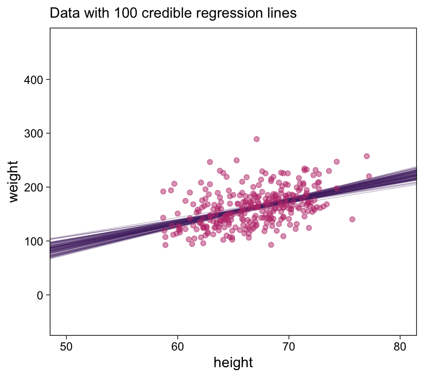
Now we make the histograms.
# We'll use this to mark off the ROPEs as white strips in the background
rope <- tibble(name = "Slope",
xmin = -0.5,
xmax = 0.5)
# Annotate the ROPE
d_text <- tibble(x = 0,
y = 0.98,
label = "ROPE",
name = "Slope")
# Here are the primary data
draws |>
transmute(Intercept = b_0,
Slope = b_1,
Scale = sigma * sd_y,
Normality = nu |> log10()) |>
pivot_longer(cols = everything()) |>
# Plot
ggplot() +
geom_rect(data = rope,
aes(xmin = xmin, xmax = xmax,
ymin = -Inf, ymax = Inf),
color = "transparent", fill = bp[9]) +
stat_histinterval(aes(x = value),
point_interval = mode_hdi, .width = 0.95,
breaks = 40, color = bp[1], fill = bp[6],
normalize = "panels", slab_color = bp[5]) +
geom_text(data = d_text,
aes(x = x, y = y, label = label),
color = "white", size = 2.75) +
scale_y_continuous(NULL, breaks = NULL) +
xlab(NULL) +
facet_wrap(~ name, scales = "free", ncol = 2)
Note how we used the formula
\[\sigma_y = \sigma_z \operatorname{SD}_y\]
to transform the residual variance from the standardized model (\(\sigma_z\)) to a metric on the original scale of the data (\(\sigma_y\)). You can get that formula at the bottom of page 485 in the text. Given its simplicity, we didn’t bother wrapping that formula into a function, but you could if you wanted to.
Here’s the scatter plot for the slope and intercept.
draws |>
ggplot(aes(x = b_1, y = b_0)) +
geom_point(alpha = 1/3, color = bp[3], size = 1/3) +
labs(x = expression(beta[1]),
y = expression(beta[0]))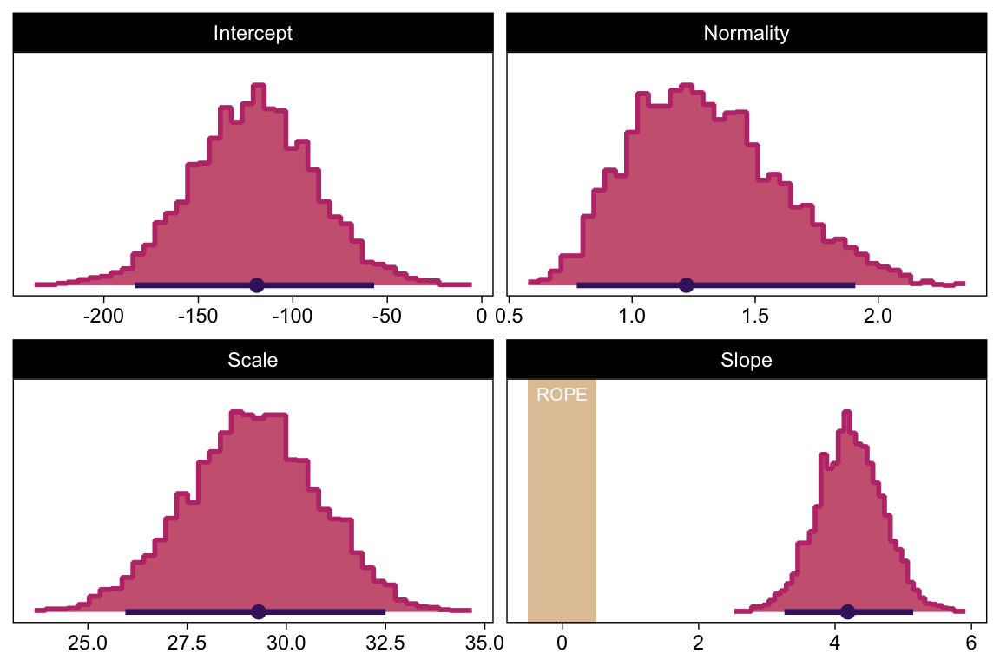
That is one strong correlation! Finally, here’s the scatter plot for \(\operatorname{log_{10}}(\nu)\) and \(\sigma_{\text{raw metric}}\).
draws |>
transmute(Scale = sigma * sd_y,
Normality = nu |> log10()) |>
ggplot(aes(x = Normality, y = Scale)) +
geom_point(color = bp[3], size = 1/3, alpha = 1/3) +
labs(x = expression(log[10](nu)),
y = expression(sigma))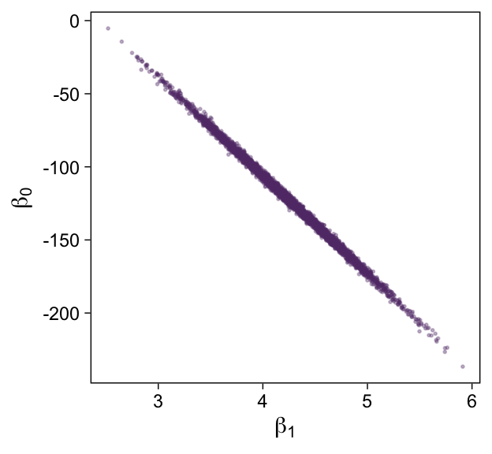
Let’s back track and make the plots for Figure 17.3 with fit17.2. We’ll need to extract the posterior draws and wrangle, as before.
draws <- as_draws_df(fit17.2)
draws <- draws |>
mutate(b_0 = make_beta_0(zeta_0 = b_Intercept,
zeta_1 = b_height_z,
sd_x = sd_x,
sd_y = sd_y,
m_x = m_x,
m_y = m_y),
b_1 = make_beta_1(zeta_1 = b_height_z,
sd_x = sd_x,
sd_y = sd_y))
glimpse(draws)Rows: 4,000
Columns: 12
$ b_Intercept <dbl> -0.077724129, -0.010711310, -0.001873157, -0.195896061, -0…
$ b_height_z <dbl> 0.4843657, 0.5524812, 0.6249699, 0.5445366, 0.5179105, 0.7…
$ sigma <dbl> 0.5218071, 0.6809332, 0.6256758, 0.5970134, 0.5785967, 0.6…
$ nu <dbl> 61.923256, 58.216784, 52.648527, 12.732608, 12.629346, 71.…
$ Intercept <dbl> -0.025242924, 0.049150238, 0.065842568, -0.136895311, -0.1…
$ lprior <dbl> -12.27425, -12.24250, -12.01483, -10.62050, -10.60597, -12…
$ lp__ <dbl> -38.12947, -36.99888, -36.58026, -37.18510, -37.39857, -37…
$ .chain <int> 1, 1, 1, 1, 1, 1, 1, 1, 1, 1, 1, 1, 1, 1, 1, 1, 1, 1, 1, 1…
$ .iteration <int> 1, 2, 3, 4, 5, 6, 7, 8, 9, 10, 11, 12, 13, 14, 15, 16, 17,…
$ .draw <int> 1, 2, 3, 4, 5, 6, 7, 8, 9, 10, 11, 12, 13, 14, 15, 16, 17,…
$ b_0 <dbl> -140.8880, -180.7617, -225.3521, -182.2334, -165.6049, -27…
$ b_1 <dbl> 4.495089, 5.127226, 5.799947, 5.053497, 4.806397, 6.569545…Here’s the top panel of Figure 17.3.
# How many posterior lines would you like?
n_lines <- 100
ggplot(data = d |>
filter(subset == 1),
aes(x = height, y = weight)) +
geom_vline(xintercept = 0, color = bp[9]) +
geom_abline(data = draws |> slice(1:n_lines),
aes(intercept = b_0, slope = b_1, group = .draw),
alpha = 1/3, color = bp[6], linewidth = 1/4) +
geom_point(alpha = 1/2, color = bp[3]) +
scale_y_continuous(breaks = seq(from = -300, to = 200, by = 100)) +
labs(x = "height",
y = "weight",
subtitle = eval(substitute(paste("Data with", n_lines, "credible regression lines")))) +
coord_cartesian(xlim = c(0, 80),
ylim = c(-350, 250))Next we’ll make the histograms.
# Here are the primary data
draws |>
transmute(Intercept = b_0,
Slope = b_1,
Scale = sigma * sd_y,
Normality = nu |> log10()) |>
pivot_longer(cols = everything()) |>
# Plot
ggplot() +
geom_rect(data = rope,
aes(xmin = xmin, xmax = xmax,
ymin = -Inf, ymax = Inf),
color = "transparent", fill = bp[9]) +
stat_histinterval(aes(x = value),
point_interval = mode_hdi, .width = 0.95,
breaks = 40, color = bp[1], fill = bp[6],
normalize = "panels", slab_color = bp[5]) +
scale_y_continuous(NULL, breaks = NULL) +
xlab(NULL) +
facet_wrap(~ name, scales = "free", ncol = 2)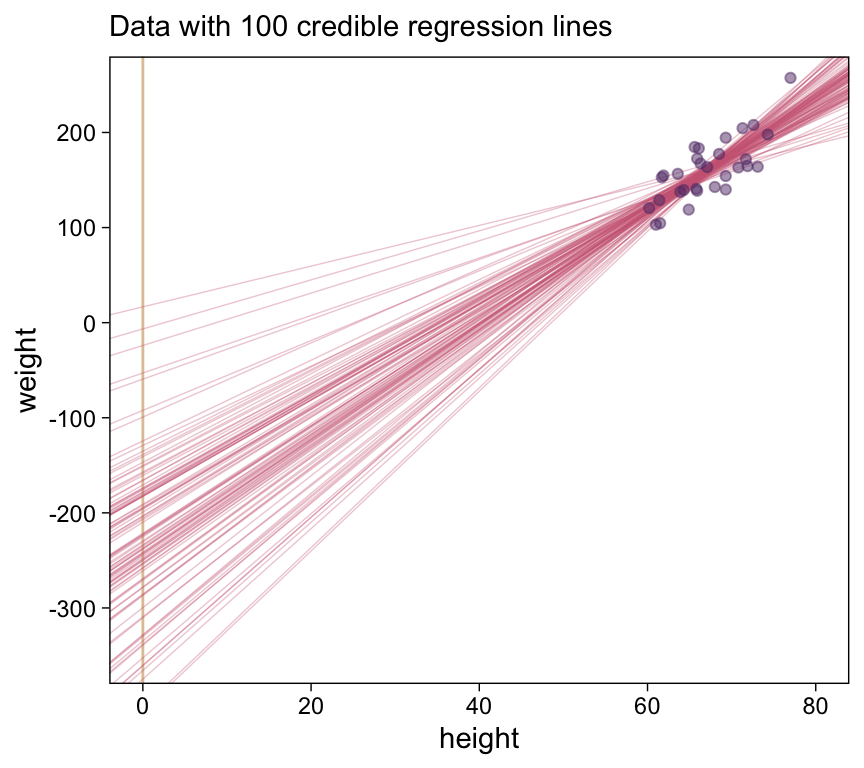
And we’ll finish up with the scatter plots.
draws |>
ggplot(aes(x = b_1, y = b_0)) +
geom_point(alpha = 1/3, color = bp[4], size = 1/3) +
labs(x = expression(beta[1]),
y = expression(beta[0]))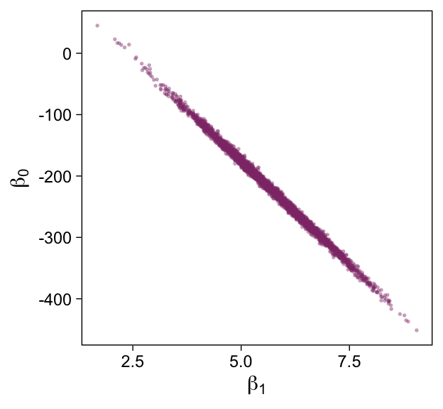
draws |>
transmute(Scale = sigma * sd_y,
Normality = nu |> log10()) |>
ggplot(aes(x = Normality, y = Scale)) +
geom_point(alpha = 1/3, color = bp[4], size = 1/3) +
labs(x = expression(log[10](nu)),
y = expression(sigma))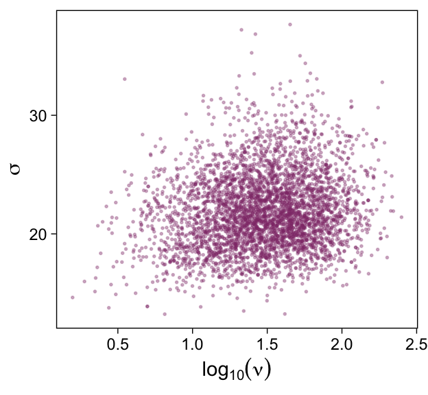
17.2.2 Robust linear regression in Stan.
Recall from Section 14.1 (p. 400) that Stan uses Hamiltonian dynamics to find proposed positions in parameter space. The trajectories use the gradient of the posterior distribution to move large distances even in narrow distributions. Thus, HMC by itself, without data standardization, should be able to efficiently generate a representative sample from the posterior distribution. (p. 487)
To be clear, we’re going to fit the models with Stan/brms twice. Above, we used the standardized data like Kruschke did with his JAGS code. Now we’re getting ready to follow along with the text and use Stan/brms to fit the models with the unstandardized data.
17.2.2.1 Constants for vague priors.
The issues is we want a system where we can readily specify vague priors on our regression models when the data are not standardized. As it turns out,
a regression slope can take on a maximum value of \(\operatorname{SD}_y / \operatorname{SD}_x\) for data that are perfectly correlated. Therefore, the prior on the slope will be given a standard deviation that is large compared to that maximum. The biggest that an intercept could be, for data that are perfectly correlated, is \(M_x \operatorname{SD}_y / \operatorname{SD}_x\). Therefore, the prior on the intercept will have a standard deviation that is large compared to that maximum. (p. 487)
With that in mind, we’ll specify our stanvars as follows.
beta_0_sigma <- 10 * abs(m_x * sd_y / sd_x)
beta_1_sigma <- 10 * abs(sd_y / sd_x)
stanvars <- stanvar(beta_0_sigma, name = "beta_0_sigma") +
stanvar(beta_1_sigma, name = "beta_1_sigma") +
stanvar(sd_y, name = "sd_y") +
stanvar(1/29, name = "one_over_twentynine")As in Chapter 16, “set the priors to be extremely broad relative to the data” (p. 487). With our stanvars defined, we’re ready to fit fit17.3.
fit17.3 <- brm(
data = d,
family = student,
weight ~ 1 + height,
prior = c(prior(normal(0, beta_0_sigma), class = Intercept),
prior(normal(0, beta_1_sigma), class = b),
prior(normal(0, sd_y), class = sigma),
prior(exponential(one_over_twentynine), class = nu)),
chains = 4, cores = 4,
stanvars = stanvars,
seed = 17,
file = "fits/fit17.03")Here’s the model summary.
print(fit17.3) Family: student
Links: mu = identity; sigma = identity; nu = identity
Formula: weight ~ 1 + height
Data: d (Number of observations: 300)
Draws: 4 chains, each with iter = 2000; warmup = 1000; thin = 1;
total post-warmup draws = 4000
Regression Coefficients:
Estimate Est.Error l-95% CI u-95% CI Rhat Bulk_ESS Tail_ESS
Intercept -120.80 33.56 -186.56 -56.05 1.00 3366 2743
height 4.22 0.50 3.25 5.21 1.00 3407 2778
Further Distributional Parameters:
Estimate Est.Error l-95% CI u-95% CI Rhat Bulk_ESS Tail_ESS
sigma 29.15 1.67 25.81 32.38 1.00 2556 2046
nu 25.44 20.68 6.30 81.96 1.00 2441 2841
Draws were sampled using sampling(NUTS). For each parameter, Bulk_ESS
and Tail_ESS are effective sample size measures, and Rhat is the potential
scale reduction factor on split chains (at convergence, Rhat = 1).Now compare the histograms for these posterior draws to those we made, above, from those fit17.1. You’ll see they’re quite similar.
# Here are the primary data
as_draws_df(fit17.3) |>
transmute(Intercept = b_Intercept,
Slope = b_height,
Scale = sigma,
Normality = nu |> log10()) |>
pivot_longer(cols = everything()) |>
# Plot
ggplot() +
geom_rect(data = rope,
aes(xmin = xmin, xmax = xmax,
ymin = -Inf, ymax = Inf),
color = "transparent", fill = bp[9]) +
stat_histinterval(aes(x = value),
point_interval = mode_hdi, .width = 0.95,
breaks = 40, color = bp[1], fill = bp[6],
normalize = "panels", slab_color = bp[5]) +
scale_y_continuous(NULL, breaks = NULL) +
xlab(NULL) +
facet_wrap(~ name, ncol = 2, scales = "free")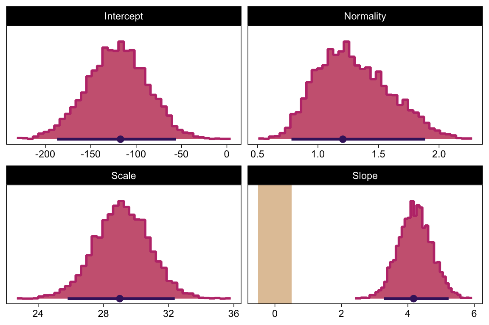
17.2.3 Stan or JAGS?
In this ebook we only fit the models with brms, which uses Stan under the hood. But since we fit the \(N = 300\) model with both standardized and unstandardized data, we can compare their performance. They had equally impressive autocorrelation plots.
# Set the bayesplot color scheme
color_scheme_set(scheme = bp[c(1, 3, 8, 7, 5, 5)])
as_draws_df(fit17.1) |>
mutate(chain = .chain) |>
mcmc_acf(pars = vars(b_Intercept:nu),
lags = 10) +
ggtitle("fit17.1")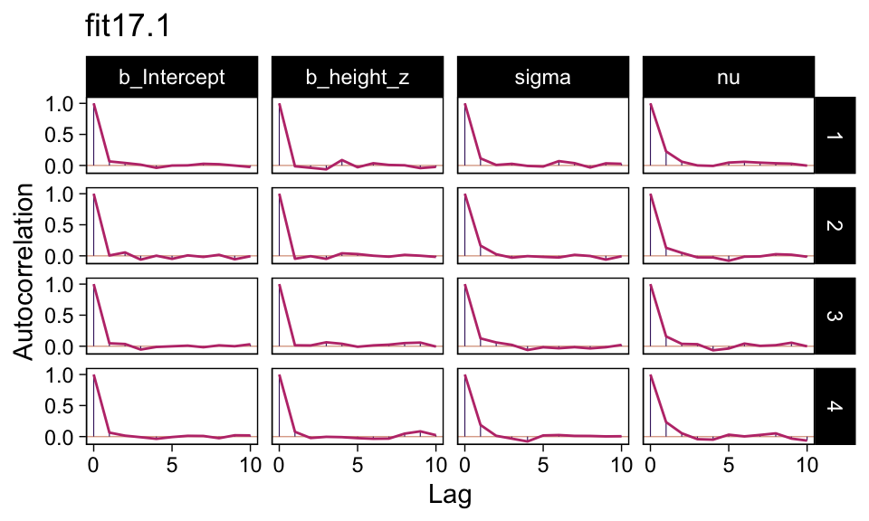
as_draws_df(fit17.3) |>
mutate(chain = .chain) |>
mcmc_acf(pars = vars(b_Intercept:nu),
lags = 10) +
ggtitle("fit17.3")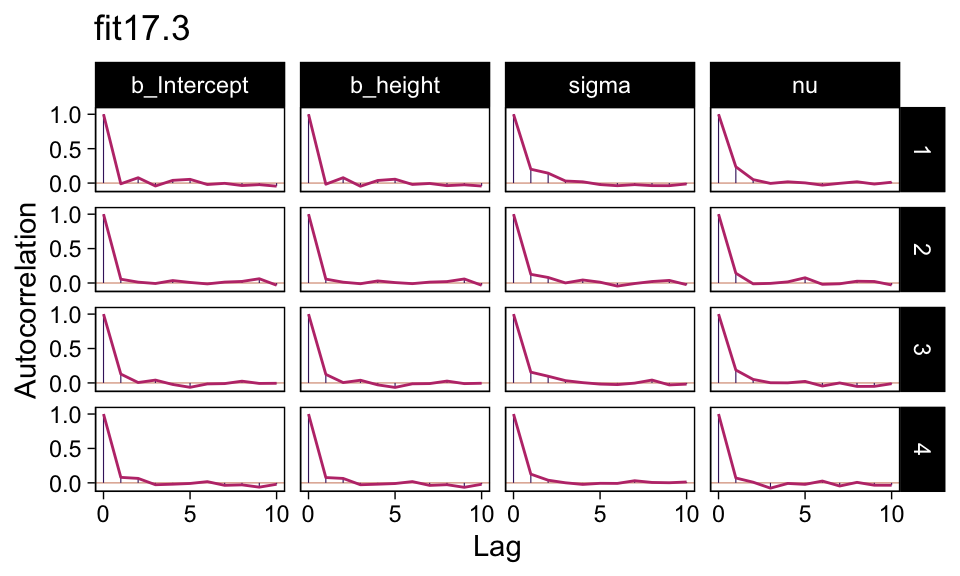
Their \(N_\textit{eff}/N\) ratios were pretty similar. Both were reasonable. You’d probably want to run a simulation to contrast them with any rigor.
# Change the bayesplot color scheme
color_scheme_set(scheme = bp[c(1, 3, 4, 6, 7, 9)])
p1 <- neff_ratio(fit17.1) |>
mcmc_neff() +
yaxis_text(hjust = 0) +
ggtitle("fit17.1")
p2 <- neff_ratio(fit17.3) |>
mcmc_neff() +
yaxis_text(hjust = 0) +
ggtitle("fit17.3")
p1 / p2 + plot_layout(guide = "collect")
17.2.4 Interpreting the posterior distribution.
Halfway through the prose, Kruschke mentioned how the models provide entire posteriors for the weight of a 50-inch-tall person. brms offers a few ways to do so.
In some applications, there is interest in extrapolating or interpolating trends at \(x\) values sparsely represented in the current data. For instance, we might want to predict the weight of a person who is \(50\) inches tall. A feature of Bayesian analysis is that we get an entire distribution of credible predicted values, not only a point estimate. (p. 489)
Since this is such a simple model, one way is to work directly with the posterior draws Here we use the model formula \(y_i = \beta_0 + \beta_1 x_i\) by adding the transformed intercept b_0 to the product of 50 and the transformed coefficient for height, b_1.
draws |>
mutate(weight_at_50 = b_0 + b_1 * 50) |>
ggplot(aes(x = weight_at_50)) +
stat_histinterval(point_interval = mode_hdi, .width = 0.95,
breaks = 40, color = bp[1], fill = bp[6],
normalize = "panels", slab_color = bp[5]) +
scale_y_continuous(NULL, breaks = NULL) +
xlab("lbs")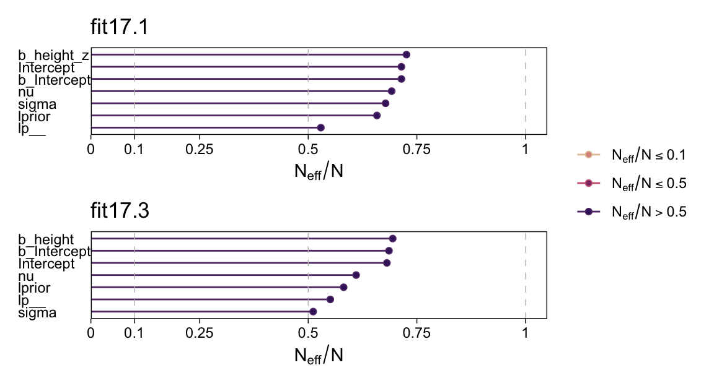
Looks pretty wide, doesn’t it? Hopefully this isn’t a surprise. Recall that this draws is from fit17.2, the posterior based on the \(n = 30\) data. With so few cases, most predictions from that model are uncertain. But also, 50 inches is way out of the bounds of the data the model was based on, so we should be uncertain in this range.
Let’s practice a second method. With the brms::fitted() function, we can specify the desired height value into a tibble, which we’ll then feed into the newdata argument. Fitted will then return the model-implied criterion value for that predictor variable. To warm up, we’ll first to it with fit17.3, the model based on the untransformed data.
nd <- tibble(height = 50)
fitted(fit17.3, newdata = nd) Estimate Est.Error Q2.5 Q97.5
[1,] 90.24681 8.647298 72.80356 106.8493The code returned a typical brms-style summary of the posterior mean, standard deviation, and 95% percentile-based intervals. The same basic method will work for the standardized models, fit17.1 or fit17.2. But that will take a little more wrangling. First, we’ll need to transform our desired value 50 into its standardized version.
nd <- tibble(height_z = (50 - mean(d$height)) / sd(d$height))When we feed this value into fitted(), it will return the corresponding posterior within the standardized metric. But we want unstandardized, so we’ll need to transform. That’ll be a few-step process. First, to do the transformation properly we’ll want to work with the poster draws themselves, rather than summary values. So we’ll set summary = FALSE. We’ll then convert the draws into a tibble format. Then we’ll use the transmute() function to do the conversion. In the final step, we’ll use mean_qi() to compute the summary values.
fitted(fit17.1,
newdata = nd,
summary = FALSE) |>
as_tibble() |>
transmute(weight = V1 * sd(d$weight) + mean(d$weight)) |>
mean_qi()# A tibble: 1 × 6
weight .lower .upper .width .point .interval
<dbl> <dbl> <dbl> <dbl> <chr> <chr>
1 90.3 74.2 107. 0.95 mean qi If you look above, you’ll see the results are within rounding error of those from fit3.
17.3 Hierarchical regression on individuals within groups
In the previous applications, the \(j\)th individual contributed a single \(x_j, y_j\) pair. But suppose instead that every individual, \(j\), contributes multiple observations of \(x_{i \mid j}, y_{i \mid j}\) pairs. (The subscript notation \(i \mid j\) means the \(i\)th observation within the \(j\)th individual.) With these data, we can estimate a regression curve for every individual. If we also assume that the individuals are mutually representative of a common group, then we can estimate group-level parameters too. (p. 490)
Load the fictitious data and take a glimpse().
my_data <- read_csv("data.R/HierLinRegressData.csv")
glimpse(my_data)Rows: 132
Columns: 3
$ Subj <dbl> 1, 1, 1, 1, 1, 1, 2, 2, 2, 2, 2, 2, 2, 2, 2, 3, 3, 3, 3, 3, 3, 3,…
$ X <dbl> 60.2, 61.5, 61.7, 62.3, 67.6, 69.2, 53.7, 60.1, 60.5, 62.3, 63.0,…
$ Y <dbl> 145.6, 157.3, 165.6, 158.8, 196.1, 183.9, 165.0, 166.9, 179.0, 19…Our goal is to describe each individual with a linear regression, and simultaneously to estimate the typical slope and intercept of the group overall. A key assumption for our analysis is that each individual is representative of the group. Therefore, every individual informs the estimate of the group slope and intercept, which in turn inform the estimates of all the individual slopes and intercepts. Thereby we get sharing of information across individuals, and shrinkage of individual estimates toward the overarching mode. (p. 491)
17.3.1 The model and implementation in JAGS brms.
Kruschke described the model diagram in Figure 17.6 as “a bit daunting” (p. 491). The code to make our version of the diagram is “a bit daunting,” too. Just like the code for any other diagram, it’s modular. If you’re following along with me and making these on your own, just build it up, step by step.
# Normal density
p1 <- tibble(x = seq(from = -3, to = 3, by = 0.1)) |>
ggplot(aes(x = x, y = (dnorm(x)) / max(dnorm(x)))) +
geom_area(fill = bp[6]) +
annotate(geom = "text",
x = 0, y = 0.2,
label = "normal",
color = bp[1], size = 7) +
annotate(geom = "text",
x = c(0, 1.5), y = 0.6,
label = c("italic(M)[0]", "italic(S)[0]"),
color = bp[1], family = "Times", parse = TRUE, size = 7) +
scale_x_continuous(expand = c(0, 0)) +
theme_void() +
theme(axis.line.x = element_line(color = bp[1], linewidth = 0.5))
# Half-normal density
p2 <- tibble(x = seq(from = 0, to = 3, by = 0.01)) |>
ggplot(aes(x = x, y = (dnorm(x)) / max(dnorm(x)))) +
geom_area(fill = bp[6]) +
annotate(geom = "text",
x = 1.5, y = 0.2,
label = "half-normal",
color = bp[1], size = 7) +
annotate(geom = "text",
x = 1.5, y = 0.6,
label = "0*','*~italic(S)[sigma][0]",
color = bp[1], family = "Times", parse = TRUE, size = 7) +
scale_x_continuous(expand = c(0, 0)) +
theme_void() +
theme(axis.line.x = element_line(color = bp[1], linewidth = 0.5))
# A second normal density
p3 <- tibble(x = seq(from = -3, to = 3, by = 0.1)) |>
ggplot(aes(x = x, y = (dnorm(x)) / max(dnorm(x)))) +
geom_area(fill = bp[6]) +
annotate(geom = "text",
x = 0, y = 0.2,
label = "normal",
color = bp[1], size = 7) +
annotate(geom = "text",
x = c(0, 1.5), y = 0.6,
label = c("italic(M)[1]", "italic(S)[1]"),
color = bp[1], family = "Times", parse = TRUE, size = 7) +
scale_x_continuous(expand = c(0, 0)) +
theme_void() +
theme(axis.line.x = element_line(color = bp[1], linewidth = 0.5))
# A second half-normal density
p4 <- tibble(x = seq(from = 0, to = 3, by = 0.01)) |>
ggplot(aes(x = x, y = (dnorm(x)) / max(dnorm(x)))) +
geom_area(fill = bp[6]) +
annotate(geom = "text",
x = 1.5, y = 0.2,
label = "half-normal",
color = bp[1], size = 7) +
annotate(geom = "text",
x = 1.5, y = 0.6,
label = "0*','*~italic(S)[sigma][1]",
color = bp[1], family = "Times", parse = TRUE, size = 7) +
scale_x_continuous(expand = c(0, 0)) +
theme_void() +
theme(axis.line.x = element_line(color = bp[1], linewidth = 0.5))
# Four annotated arrows
p5 <- tibble(x = c(0.05, 0.35, 0.65, 0.95),
y = 1,
xend = c(0.32, 0.4, 0.65, 0.72),
yend = 0.2) |>
ggplot(aes(x = x, xend = xend,
y = y, yend = yend)) +
geom_segment(arrow = my_arrow, color = bp[1]) +
annotate(geom = "text",
x = c(0.15, 0.35, 0.625, 0.78), y = 0.55,
label = "'~'",
color = bp[1], family = "Times", parse = TRUE, size = 10) +
xlim(0, 1) +
theme_void()
# Third normal density
p6 <- tibble(x = seq(from = -3, to = 3, by = 0.1)) |>
ggplot(aes(x = x, y = (dnorm(x)) / max(dnorm(x)))) +
geom_area(fill = bp[6]) +
annotate(geom = "text",
x = 0, y = 0.2,
label = "normal",
color = bp[1], size = 7) +
annotate(geom = "text",
x = c(0, 1.5), y = 0.6,
label = c("mu[0]", "sigma[0]"),
color = bp[1], family = "Times", parse = TRUE, size = 7) +
scale_x_continuous(expand = c(0, 0)) +
theme_void() +
theme(axis.line.x = element_line(color = bp[1], linewidth = 0.5))
# Fourth normal density
p7 <- tibble(x = seq(from = -3, to = 3, by = 0.1)) |>
ggplot(aes(x = x, y = (dnorm(x)) / max(dnorm(x)))) +
geom_area(fill = bp[6]) +
annotate(geom = "text",
x = 0, y = 0.2,
label = "normal",
color = bp[1], size = 7) +
annotate(geom = "text",
x = c(0, 1.5), y = 0.6,
label = c("mu[1]", "sigma[1]"),
color = bp[1], family = "Times", parse = TRUE, size = 7) +
scale_x_continuous(expand = c(0, 0)) +
theme_void() +
theme(axis.line.x = element_line(color = bp[1], linewidth = 0.5))
# Two annotated arrows
p8 <- tibble(x = c(0.18, 0.82),
y = 1,
xend = c(0.36, 0.55),
yend = 0) |>
ggplot(aes(x = x, xend = xend,
y = y, yend = yend)) +
geom_segment(arrow = my_arrow, color = bp[1]) +
annotate(geom = "text",
x = c(0.18, 0.33, 0.64, 0.77), y = 0.55,
label = c("'~'", "italic(j)", "'~'", "italic(j)"),
size = c(10, 7, 10, 7),
color = bp[1], family = "Times", parse = TRUE) +
xlim(0, 1) +
theme_void()
# Exponential density
p9 <- tibble(x = seq(from = 0, to = 1, by = 0.01)) |>
ggplot(aes(x = x, y = (dexp(x, 2) / max(dexp(x, 2))))) +
geom_area(fill = bp[6]) +
annotate(geom = "text",
x = 0.5, y = 0.2,
label = "exp",
color = bp[1], size = 7) +
annotate(geom = "text",
x = 0.5, y = 0.6,
label = "italic(K)",
color = bp[1], family = "Times", parse = TRUE, size = 7) +
scale_x_continuous(expand = c(0, 0)) +
theme_void() +
theme(axis.line.x = element_line(color = bp[1], linewidth = 0.5))
# Likelihood formula
p10 <- tibble(x = 0.5,
y = 0.25,
label = "beta[0][italic(j)]+beta[1][italic(j)]*italic(x)[italic(i)*'|'*italic(j)]") |>
ggplot(aes(x = x, y = y, label = label)) +
geom_text(color = bp[1], family = "Times", parse = TRUE, size = 7) +
scale_x_continuous(expand = c(0, 0), limits = c(0, 1)) +
ylim(0, 1) +
theme_void()
# Half-normal density
p11 <- tibble(x = seq(from = 0, to = 3, by = 0.01)) |>
ggplot(aes(x = x, y = (dnorm(x)) / max(dnorm(x)))) +
geom_area(fill = bp[6]) +
annotate(geom = "text",
x = 1.5, y = 0.2,
label = "half-normal",
color = bp[1], size = 7) +
annotate(geom = "text",
x = 1.5, y = 0.6,
label = "0*','*~italic(S)[sigma]",
color = bp[1], family = "Times", parse = TRUE, size = 7) +
scale_x_continuous(expand = c(0, 0)) +
theme_void() +
theme(axis.line.x = element_line(color = bp[1], linewidth = 0.5))
# Four annotated arrows
p12 <- tibble(x = c(0.43, 0.43, 1.5, 2.5),
y = c(1, 0.55, 1, 1),
xend = c(0.43, 1.225, 1.5, 1.75),
yend = c(0.8, 0.15, 0.2, 0.2)) |>
ggplot(aes(x = x, xend = xend,
y = y, yend = yend)) +
geom_segment(arrow = my_arrow, color = bp[1]) +
annotate(geom = "text",
x = c(0.3, 0.7, 1.38, 2), y = c(0.92, 0.22, 0.65, 0.6),
label = c("'~'", "'='", "'='", "'~'"),
size = 10,
color = bp[1], family = "Times", parse = TRUE) +
annotate(geom = "text",
x = 0.43, y = 0.7,
label = "nu*minute+1",
color = bp[1], family = "Times", parse = TRUE, size = 7) +
xlim(0, 3) +
theme_void()
# Student-t density
p13 <- tibble(x = seq(from = -3, to = 3, by = 0.1)) |>
ggplot(aes(x = x, y = (dt(x, 3) / max(dt(x, 3))))) +
geom_area(fill = bp[6]) +
annotate(geom = "text",
x = 0, y = 0.2,
label = "student t",
color = bp[1], size = 7) +
annotate(geom = "text",
x = 0, y = 0.6,
label = "nu~~mu[italic(i)*'|'*italic(j)]~~sigma",
color = bp[1], family = "Times", parse = TRUE, size = 7) +
scale_x_continuous(expand = c(0, 0)) +
theme_void() +
theme(axis.line.x = element_line(color = bp[1], linewidth = 0.5))
# The final annotated arrow
p14 <- tibble(x = c(0.375, 0.625),
y = c(1/3, 1/3),
label = c("'~'", "italic(i)*'|'*italic(j)")) |>
ggplot(aes(x = x, y = y, label = label)) +
geom_text(color = bp[1], family = "Times", parse = TRUE, size = c(10, 7), ) +
geom_segment(x = 0.5, xend = 0.5,
y = 1, yend = 0,
arrow = my_arrow, color = bp[1]) +
xlim(0, 1) +
theme_void()
# Some text
p15 <- tibble(x = 0.5,
y = 0.5,
label = "italic(y)[italic(i)*'|'*italic(j)]") |>
ggplot(aes(x = x, y = y, label = label)) +
geom_text(color = bp[1], family = "Times", parse = TRUE, size = 7) +
xlim(0, 1) +
theme_void()
# Define the layout
layout <- c(
area(t = 1, b = 2, l = 1, r = 3),
area(t = 1, b = 2, l = 5, r = 7),
area(t = 1, b = 2, l = 9, r = 11),
area(t = 1, b = 2, l = 13, r = 15),
area(t = 4, b = 5, l = 5, r = 7),
area(t = 4, b = 5, l = 9, r = 11),
area(t = 3, b = 4, l = 1, r = 15),
area(t = 7, b = 8, l = 3, r = 5),
area(t = 7, b = 8, l = 7, r = 9),
area(t = 7, b = 8, l = 11, r = 13),
area(t = 6, b = 7, l = 5, r = 11),
area(t = 10, b = 11, l = 7, r = 9),
area(t = 9, b = 10, l = 3, r = 13),
area(t = 12, b = 12, l = 7, r = 9),
area(t = 13, b = 13, l = 7, r = 9))
# Combine, adjust, and display!
(p1 + p2 + p3 + p4 + p6 + p7 + p5 + p9 + p10 + p11 + p8 + p13 + p12 + p14 + p15) +
plot_layout(design = layout) &
ylim(0, 1) &
theme(plot.margin = margin(0, 5.5, 0, 5.5))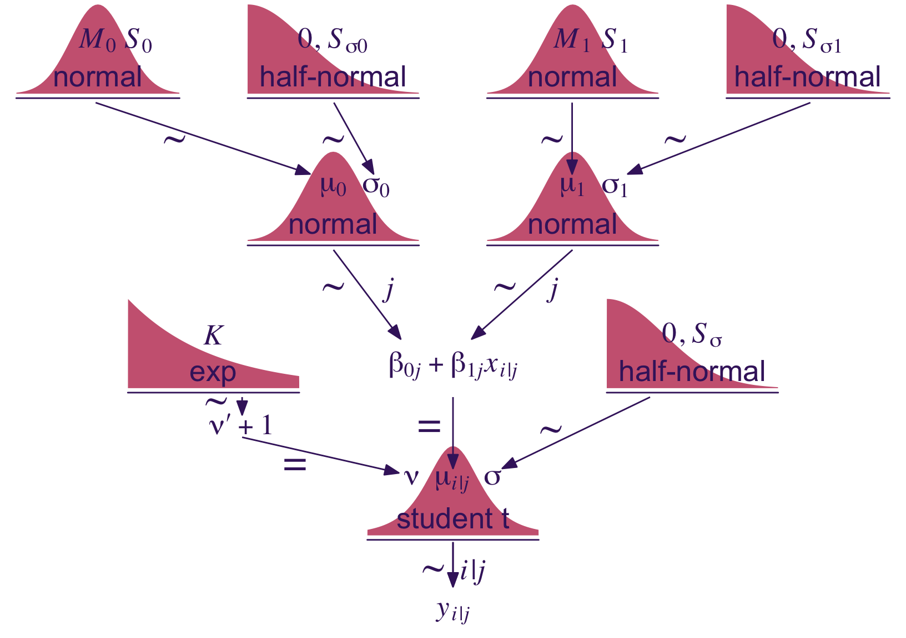
Just look at that sweet thing! If you made your own version; have a piece of cake. 🍰 You earned it.
Now let’s standardize the data and define our stanvars. I should note that standardizing and mean centering, more generally, becomes complicated with multilevel models. Here we’re just standardizing based on the grand mean and grand standard deviation. But there are other ways to standardize, such as within groups. Craig Enders has a good (2013) book chapter that touched on the topic, as well as an earlier (2007) paper with Tofighi.
my_data <- my_data |>
mutate(x_z = standardize(X),
y_z = standardize(Y))In my experience, you typically use the (|) syntax when fitting a hierarchical model with thebrm() function. The terms before the | are those varying by group and you tell brm() what the grouping variable is after the |. In the case of multiple group-level parameters–which is the case with this model (i.e., both intercept and the x_z slope)–, this syntax also estimates correlations among the group-level parameters. Kruschke’s model doesn’t appear to include such a correlation. Happily, we can use the (||) syntax instead, which omits correlations among the group-level parameters. If you’re curious about the distinction, fit the model both ways and explore the differences in the print() output. For more on the topic, see the Group-level terms subsection of the brmsformula section of the brms reference manual (Bürkner, 2022a).
fit17.4 <- brm(
data = my_data,
family = student,
y_z ~ 1 + x_z + (1 + x_z || Subj),
prior = c(prior(normal(0, 10), class = Intercept),
prior(normal(0, 10), class = b),
prior(normal(0, 1), class = sigma),
# The next line is new
prior(normal(0, 1), class = sd),
prior(exponential(one_over_twentynine), class = nu)),
chains = 4, cores = 4,
seed = 17,
stanvars = stanvar(1/29, name = "one_over_twentynine"),
file = "fits/fit17.04")Did you catch that prior(normal(0, 1), class = sd) line in the code? That’s the prior we used for our hierarchical variance parameters, \(\sigma_0\) and \(\sigma_1\). Just like with the scale parameter, \(\sigma\), we used the zero-mean half-normal distribution. By default, brms sets their left boundary to zero, which keeps the HMC algorithm from exploring negative variance values.
Anyway, here’s the model summary().
summary(fit17.4) Family: student
Links: mu = identity; sigma = identity; nu = identity
Formula: y_z ~ 1 + x_z + (1 + x_z || Subj)
Data: my_data (Number of observations: 132)
Draws: 4 chains, each with iter = 2000; warmup = 1000; thin = 1;
total post-warmup draws = 4000
Multilevel Hyperparameters:
~Subj (Number of levels: 25)
Estimate Est.Error l-95% CI u-95% CI Rhat Bulk_ESS Tail_ESS
sd(Intercept) 1.02 0.18 0.73 1.43 1.00 1192 2355
sd(x_z) 0.22 0.12 0.01 0.46 1.00 837 1111
Regression Coefficients:
Estimate Est.Error l-95% CI u-95% CI Rhat Bulk_ESS Tail_ESS
Intercept 0.08 0.22 -0.37 0.49 1.01 965 1406
x_z 0.70 0.10 0.49 0.90 1.00 2833 2491
Further Distributional Parameters:
Estimate Est.Error l-95% CI u-95% CI Rhat Bulk_ESS Tail_ESS
sigma 0.59 0.05 0.49 0.70 1.00 1870 2073
nu 38.76 29.67 6.65 111.51 1.00 3472 2573
Draws were sampled using sampling(NUTS). For each parameter, Bulk_ESS
and Tail_ESS are effective sample size measures, and Rhat is the potential
scale reduction factor on split chains (at convergence, Rhat = 1).17.3.2 The posterior distribution: Shrinkage and prediction.
Keeping in the same spirit of Section 17.2.4, we’ll make the plots of Figure 17.5 in two ways. First, we’ll use our make_beta_0() and make_beta_1() functions to transform the model coefficients.
draws <- as_draws_df(fit17.4)
sd_x <- sd(my_data$X)
sd_y <- sd(my_data$Y)
m_x <- mean(my_data$X)
m_y <- mean(my_data$Y)
draws <- draws |>
mutate(b_0 = make_beta_0(zeta_0 = b_Intercept,
zeta_1 = b_x_z,
sd_x = sd_x,
sd_y = sd_y,
m_x = m_x,
m_y = m_y),
b_1 = make_beta_1(zeta_1 = b_x_z,
sd_x = sd_x,
sd_y = sd_y)) |>
select(.draw, b_0, b_1)
head(draws)# A tibble: 6 × 3
.draw b_0 b_1
<int> <dbl> <dbl>
1 1 -50.8 3.03
2 2 -91.7 3.60
3 3 -52.3 3.07
4 4 -30.7 2.70
5 5 -52.2 3.02
6 6 -66.2 3.33Here’s the top panel of Figure 17.4.
# How many posterior lines would you like?
n_lines <- 250
my_data |>
mutate(Subj = factor(Subj, levels = 25:1)) |>
ggplot(aes(x = X, y = Y)) +
geom_abline(data = draws |> slice(1:n_lines),
aes(intercept = b_0, slope = b_1, group = .draw),
alpha = 1/5, color = "grey50", linewidth = 1/4) +
geom_point(aes(color = Subj),
alpha = 1/2) +
geom_line(aes(group = Subj, color = Subj),
linewidth = 1/4) +
scale_y_continuous(breaks = seq(from = 50, to = 250, by = 50)) +
scale_color_manual(values = beyonce_palette(41, n = 25, type = "continuous"), breaks = NULL) +
labs(subtitle = eval(substitute(paste("Data from all units with", n_lines, "credible population-level\nregression lines")))) +
coord_cartesian(xlim = c(40, 95),
ylim = c(30, 270))Recall how we can use coef() to extract the Subj-specific parameters. But we’ll want posterior draws rather than summaries, which requires summary = FALSE. It’ll take a bit of wrangling to get the output in a tidy format. Once we’re there, the plot code will be fairly simple.
# First collect and wrangle the draws for the Subj-level intercept and slopes
c <- rbind(coef(fit17.4, summary = FALSE)$Subj[, , "Intercept"],
coef(fit17.4, summary = FALSE)$Subj[, , "x_z"]) |>
data.frame() |>
set_names(1:25) |>
mutate(draw = rep(1:4000, times = 2),
param = rep(c("Intercept", "Slope"), each = 4000)) |>
pivot_longer(cols = `1`:`25`, names_to = "Subj") |>
pivot_wider(names_from = param, values_from = value) |>
# Now we're ready to un-standardize the standardized coefficients
mutate(b_0 = make_beta_0(zeta_0 = Intercept,
zeta_1 = Slope,
sd_x = sd_x,
sd_y = sd_y,
m_x = m_x,
m_y = m_y),
b_1 = make_beta_1(zeta_1 = Slope,
sd_x = sd_x,
sd_y = sd_y))
# How many lines would you like?
n_lines <- 250
# Plot:
my_data |>
mutate(Subj = factor(Subj, levels = 25:1)) |>
ggplot(aes(x = X, y = Y)) +
geom_abline(data = c |> filter(draw <= n_lines),
aes(intercept = b_0, slope = b_1),
color = "grey50", linewidth = 1/4, alpha = 1/5) +
geom_point(aes(color = Subj)) +
scale_x_continuous(breaks = seq(from = 50, to = 90, by = 20)) +
scale_y_continuous(breaks = seq(from = 50, to = 250, by = 100)) +
scale_color_manual(values = beyonce_palette(41, n = 25, type = "continuous"), breaks = NULL) +
labs(subtitle = "Each unit now has its own bundle of credible regression lines") +
coord_cartesian(xlim = c(45, 90),
ylim = c(50, 270)) +
facet_wrap(~ Subj |> factor(levels = 1:25))There’s some good pedagogy in that method. But I like having options and in this case fitted() affords a simpler workflow. Here’s the preparatory data wrangling step.
# How many posterior lines would you like?
n_lines <- 250
# Since we're working with straight lines, we only need two x-values
nd <- tibble(x_z = c(-5, 5)) |>
# Transform the standardized `x_z` values to the unstandardized metric
mutate(X = x_z * sd(my_data$X) + mean(my_data$X),
name = str_c("V", 1:n()))
f <- fitted(fit17.4,
newdata = nd,
# Since we only want the fixed effects, we'll use `re_formula`
# to marginalize over the random effects
re_formula = Y_z ~ 1 + X_z,
summary = FALSE,
# Here we use `ndraws` to subset right from the get go
ndraws = n_lines) |>
as_tibble() |>
mutate(draw = 1:n()) |>
pivot_longer(cols = -draw) |>
# Transform the standardized `y_z` values back into the unstandardized `Y` metric
mutate(Y = value * sd(my_data$Y) + mean(my_data$Y)) |>
# Now attach the predictor values to the output
left_join(nd, by = "name")
head(f) # A tibble: 6 × 6
draw name value Y x_z X
<int> <chr> <dbl> <dbl> <dbl> <dbl>
1 1 V1 -3.28 48.2 -5 31.4
2 1 V2 3.99 281. 5 103.
3 2 V1 -3.40 44.4 -5 31.4
4 2 V2 3.74 273. 5 103.
5 3 V1 -4.14 20.6 -5 31.4
6 3 V2 3.89 278. 5 103. For the second time, here’s the top panel of Figure 17.4, this time based off of fitted().
p1 <- my_data |>
mutate(Subj = factor(Subj, levels = 25:1)) |>
ggplot(aes(x = X, y = Y)) +
geom_line(data = f,
aes(group = draw),
alpha = 1/5, color = "grey50", linewidth = 1/4) +
geom_point(aes(color = Subj),
alpha = 1/2) +
geom_line(aes(group = Subj, color = Subj),
linewidth = 1/4) +
scale_y_continuous(breaks = seq(from = 50, to = 250, by = 50)) +
scale_color_manual(values = beyonce_palette(41, n = 25, type = "continuous")) +
labs(subtitle = eval(substitute(paste("Data from all units with", n_lines, "credible population-level\nregression lines")))) +
coord_cartesian(xlim = c(40, 95),
ylim = c(30, 270)) +
theme(legend.position = "none")
p1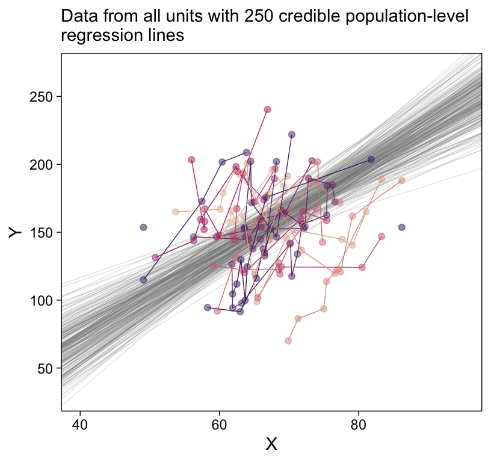
The whole process is quite similar for the Subj-specific lines. There are two main differences. First, we need to specify which Subj values we’d like to get fitted() points for. That goes into our nd tibble. Second, we omit the re_formula argument. There are other subtleties, like with the contents of the bind_cols() function. But hopefully those are self-evident.
# How many posterior lines would you like?
n_lines <- 250
nd <- tibble(x_z = c(-5, 5)) |>
mutate(X = x_z * sd(my_data$X) + mean(my_data$X)) |>
expand_grid(Subj = distinct(my_data, Subj) |> pull()) |>
mutate(name = str_c("V", 1:n()))
f <- fitted(fit17.4,
newdata = nd,
summary = FALSE,
ndraws = n_lines) |>
as_tibble() |>
mutate(draw = 1:n()) |>
pivot_longer(cols = -draw) |>
mutate(Y = value * sd(my_data$Y) + mean(my_data$Y)) |>
left_join(nd, by = "name")
head(f) # A tibble: 6 × 7
draw name value Y x_z X Subj
<int> <chr> <dbl> <dbl> <dbl> <dbl> <dbl>
1 1 V1 -3.13 53.1 -5 31.4 1
2 1 V2 -2.15 84.4 -5 31.4 2
3 1 V3 -4.15 20.5 -5 31.4 3
4 1 V4 -2.37 77.3 -5 31.4 4
5 1 V5 -3.50 41.3 -5 31.4 5
6 1 V6 -5.52 -23.7 -5 31.4 6And now for the second time, here’s the bottom panel of Figure 17.4, this time based off of fitted().
p2 <- my_data |>
mutate(Subj = factor(Subj, levels = 25:1)) |>
ggplot(aes(x = X, y = Y)) +
geom_line(data = f,
aes(group = draw),
alpha = 1/5, color = "grey50", linewidth = 1/4) +
geom_point(aes(color = Subj)) +
scale_x_continuous(breaks = seq(from = 50, to = 90, by = 20)) +
scale_y_continuous(breaks = seq(from = 50, to = 250, by = 100)) +
scale_color_manual(values = beyonce_palette(41, n = 25, type = "continuous"), breaks = NULL) +
labs(subtitle = "Each unit now has its own bundle of credible regression lines") +
coord_cartesian(xlim = c(45, 90),
ylim = c(50, 270)) +
facet_wrap(~ Subj |> factor(levels = 1:25))
# Combine with patchwork
p3 <- plot_spacer()
p4 <- (p3 | p1 | p3) +
plot_layout(widths = c(1, 4, 1))
(p4 / p2) + plot_layout(heights = c(0.6, 1))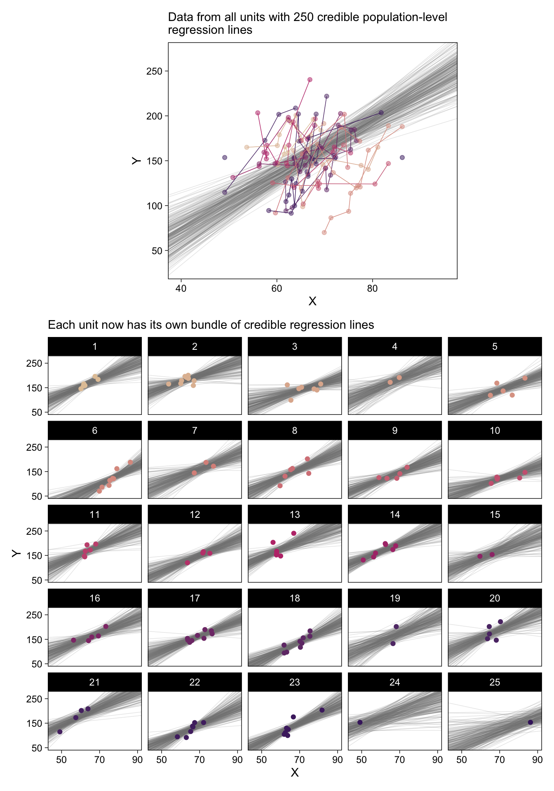
Especially if you’re new to these kinds of models, it’s easy to get lost in all that code. And for real–the wrangling required for those plots was no joke. The primary difficulty was that we had to convert standardized solutions to unstandardized solutions, which leads to an important distinction. When we used the first method of working with the as_draws_df() and coef() output, we focused on transforming the model parameters. In contrast, when we used the second method of working with the fitted() output, we focused instead on transforming the model predictions and predictor values. This distinction can be really confusing, at first. Stick with it! There will be times one method is more convenient or intuitive than the other. It’s good to have both methods in your repertoire.
17.4 Quadratic trend and weighted data
Quadratic models follow the general form
\[y = \beta_0 + \beta_1 x + \beta_2 x^2,\]
where \(\beta_2\) is the quadratic term which, when 0, reduces the results to a simple linear model. That’s right; the linear model is a special case of the quadratic.
This time the data come from the American Community Survey and Puerto Rico Community Survey. In his footnote #3, Kruschke indicated “Data are from http://www.census.gov/hhes/www/income/data/Fam_Inc_SizeofFam1.xls, retrieved December 11, 2013. Median family income for years 2009-2011.” As to our read.csv() code, note the comment.char argument.
my_data <- read.csv("data.R/IncomeFamszState3yr.csv", comment.char = "#")
glimpse(my_data)Rows: 312
Columns: 4
$ FamilySize <int> 2, 3, 4, 5, 6, 7, 2, 3, 4, 5, 6, 7, 2, 3, 4, 5, 6, 7, 2, …
$ State <chr> "Alabama", "Alabama", "Alabama", "Alabama", "Alabama", "A…
$ MedianIncome <int> 48177, 53323, 64899, 59417, 54099, 47655, 73966, 82276, 8…
$ SampErr <int> 581, 1177, 1170, 2446, 3781, 3561, 1858, 3236, 3722, 6127…Here we’ll standardize all variables but State, our grouping variable. It’d be silly to try to standardize that.
my_data <- my_data |>
mutate(family_size_z = standardize(FamilySize),
median_income_z = standardize(MedianIncome),
se_z = SampErr / (mean(SampErr)))
glimpse(my_data)Rows: 312
Columns: 7
$ FamilySize <int> 2, 3, 4, 5, 6, 7, 2, 3, 4, 5, 6, 7, 2, 3, 4, 5, 6, 7, …
$ State <chr> "Alabama", "Alabama", "Alabama", "Alabama", "Alabama",…
$ MedianIncome <int> 48177, 53323, 64899, 59417, 54099, 47655, 73966, 82276…
$ SampErr <int> 581, 1177, 1170, 2446, 3781, 3561, 1858, 3236, 3722, 6…
$ family_size_z <dbl> -1.4615023, -0.8769014, -0.2923005, 0.2923005, 0.87690…
$ median_income_z <dbl> -1.2621676, -0.9138625, -0.1303452, -0.5013924, -0.861…
$ se_z <dbl> 0.2242541, 0.4542979, 0.4515961, 0.9441060, 1.4593886,…With brms, there are a couple ways to handle measurement error on a variable (e.g., see Chapter 14 of my ebook, Statistical rethinking with brms, ggplot2, and the tidyverse (Kurz, 2023). Here we’ll use the se() syntax, following the form response | se(se_response, sigma = TRUE). In this form, se stands for standard error, the loose frequentist analogue to the Bayesian posterior \(\textit{SD}\). Unless you’re fitting a meta-analysis on summary information, make sure to specify sigma = TRUE. Without that you’ll have no estimate for \(\sigma\)! For more information on the se() method, go to the brms reference manual and find the Additional response information subsection of the brmsformula section (Bürkner, 2022a, p. 42).
fit17.5 <- brm(
data = my_data,
family = student,
median_income_z | se(se_z, sigma = TRUE) ~ 1 + family_size_z + I(family_size_z^2) +
(1 + family_size_z + I(family_size_z^2) || State),
prior = c(prior(normal(0, 10), class = Intercept),
prior(normal(0, 10), class = b),
prior(normal(0, 1), class = sigma),
prior(normal(0, 1), class = sd),
prior(exponential(one_over_twentynine), class = nu)),
chains = 4, cores = 4,
stanvars = stanvar(1/29, name = "one_over_twentynine"),
seed = 17,
file = "fits/fit17.05")Did you notice the I(family_size_z^2) part of the formula? The brms package follows a typical convention in R statistical functions in that if you want to multiply a variable by itself as in a quadratic model, you nest the family_size_z^2 part within the I() function.
Take a look at the model summary.
print(fit17.5) Family: student
Links: mu = identity; sigma = identity; nu = identity
Formula: median_income_z | se(se_z, sigma = TRUE) ~ 1 + family_size_z + I(family_size_z^2) + (1 + family_size_z + I(family_size_z^2) || State)
Data: my_data (Number of observations: 312)
Draws: 4 chains, each with iter = 2000; warmup = 1000; thin = 1;
total post-warmup draws = 4000
Multilevel Hyperparameters:
~State (Number of levels: 52)
Estimate Est.Error l-95% CI u-95% CI Rhat Bulk_ESS
sd(Intercept) 0.75 0.08 0.61 0.94 1.00 846
sd(family_size_z) 0.07 0.04 0.00 0.16 1.00 810
sd(Ifamily_size_zE2) 0.05 0.04 0.00 0.13 1.01 650
Tail_ESS
sd(Intercept) 1525
sd(family_size_z) 1280
sd(Ifamily_size_zE2) 1427
Regression Coefficients:
Estimate Est.Error l-95% CI u-95% CI Rhat Bulk_ESS Tail_ESS
Intercept 0.38 0.12 0.15 0.61 1.00 489 750
family_size_z 0.12 0.05 0.02 0.23 1.00 2196 2371
Ifamily_size_zE2 -0.44 0.04 -0.52 -0.36 1.00 2465 3179
Further Distributional Parameters:
Estimate Est.Error l-95% CI u-95% CI Rhat Bulk_ESS Tail_ESS
sigma 0.05 0.04 0.00 0.13 1.00 2004 1516
nu 68.44 35.81 21.43 158.52 1.00 5287 3242
Draws were sampled using sampling(NUTS). For each parameter, Bulk_ESS
and Tail_ESS are effective sample size measures, and Rhat is the potential
scale reduction factor on split chains (at convergence, Rhat = 1).Do see that Ifamily_size_zE2 row? That’s the summary of our quadratic term.
17.4.1 Results and interpretation.
A new model type requires a different approach to un-standardizing our standardized coefficients. Based on Equation 17.3, we can convert our coefficients using the formulas
\[\begin{align*} \beta_0 & = \zeta_0 \operatorname{SD}_y + M_y - \frac{\zeta_1 M_x \operatorname{SD}_y}{\operatorname{SD}_x} + \frac{\zeta_2 M^{2}_x \operatorname{SD}_y}{\operatorname{SD}^{2}_x}, \\ \beta_1 & = \frac{\zeta_1 \operatorname{SD}_y}{\operatorname{SD}_x} - \frac{2 \zeta_2 M_x \operatorname{SD}_y}{\operatorname{SD}^{2}_x}, \text{and} \\ \beta_2 & = \frac{\zeta_2 \operatorname{SD}_y}{\operatorname{SD}^{2}_x}. \end{align*}\]
We’ll make new custom functions to use them.
make_beta_0 <- function(zeta_0, zeta_1, zeta_2, sd_x, sd_y, m_x, m_y) {
zeta_0 * sd_y + m_y - zeta_1 * m_x * sd_y / sd_x + zeta_2 * m_x^2 * sd_y / sd_x^2
}
make_beta_1 <- function(zeta_1, zeta_2, sd_x, sd_y, m_x) {
zeta_1 * sd_y / sd_x - 2 * zeta_2 * m_x * sd_y / sd_x^2
}
make_beta_2 <- function(zeta_2, sd_x, sd_y) {
zeta_2 * sd_y / sd_x^2
}
# Save the sample statistics
m_x <- mean(my_data$FamilySize)
m_y <- mean(my_data$MedianIncome)
sd_x <- sd(my_data$FamilySize)
sd_y <- sd(my_data$MedianIncome)Now we’ll extract our posterior draws and make the conversions.
draws <- as_draws_df(fit17.5) |>
mutate(b_0 = make_beta_0(zeta_0 = b_Intercept,
zeta_1 = b_family_size_z,
zeta_2 = b_Ifamily_size_zE2,
sd_x = sd_x,
sd_y = sd_y,
m_x = m_x,
m_y = m_y),
b_1 = make_beta_1(zeta_1 = b_family_size_z,
zeta_2 = b_Ifamily_size_zE2,
sd_x = sd_x,
sd_y = sd_y,
m_x = m_x),
b_2 = make_beta_2(zeta_2 = b_Ifamily_size_zE2,
sd_x = sd_x,
sd_y = sd_y)) |>
select(.draw, b_0:b_2)Our geom_abline() approach from before won’t work with curves. We’ll have to resort to geom_line(). With the geom_line() approach, we’ll need many specific values of model-implied MedianIncome across a densely-packed range of FamilySize. We want to use a lot of FamilySize values, like 30 or 50 or so, to make sure the curves look smooth. Below, we’ll use 50 (i.e., length.out = 50). But if it’s still not clear why, try plugging in a lesser value, like 5 or so. You’ll see.
# How many posterior lines would you like?
n_lines <- 200
set.seed(17)
draws <- draws |>
slice_sample(n = n_lines) |>
rownames_to_column(var = "draw") |>
expand_grid(FamilySize = seq(from = 1, to = 9, length.out = 50)) |>
mutate(MedianIncome = b_0 + b_1 * FamilySize + b_2 * FamilySize^2)
head(draws)# A tibble: 6 × 7
draw .draw b_0 b_1 b_2 FamilySize MedianIncome
<chr> <int> <dbl> <dbl> <dbl> <dbl> <dbl>
1 1 1970 22713. 20535. -2146. 1 41102.
2 1 1970 22713. 20535. -2146. 1.16 43697.
3 1 1970 22713. 20535. -2146. 1.33 46177.
4 1 1970 22713. 20535. -2146. 1.49 48543.
5 1 1970 22713. 20535. -2146. 1.65 50794.
6 1 1970 22713. 20535. -2146. 1.82 52931.Now we’re ready to make the top panel of Figure 17.7.
my_data |>
ggplot(aes(x = FamilySize, y = MedianIncome)) +
geom_line(data = draws,
aes(group = .draw),
alpha = 1/5, color = "grey67", linewidth = 1/4) +
geom_line(aes(group = State, color = State),
alpha = 2/3, linewidth = 1/4) +
geom_point(aes(color = State),
alpha = 2/3, size = 1/2) +
scale_x_continuous("Family size", breaks = 1:8) +
scale_color_manual(values = beyonce_palette(41, n = 52, type = "continuous"), breaks = NULL) +
labs(y = "Median income",
title = "All states") +
coord_cartesian(xlim = c(1, 8),
ylim = c(0, 150000))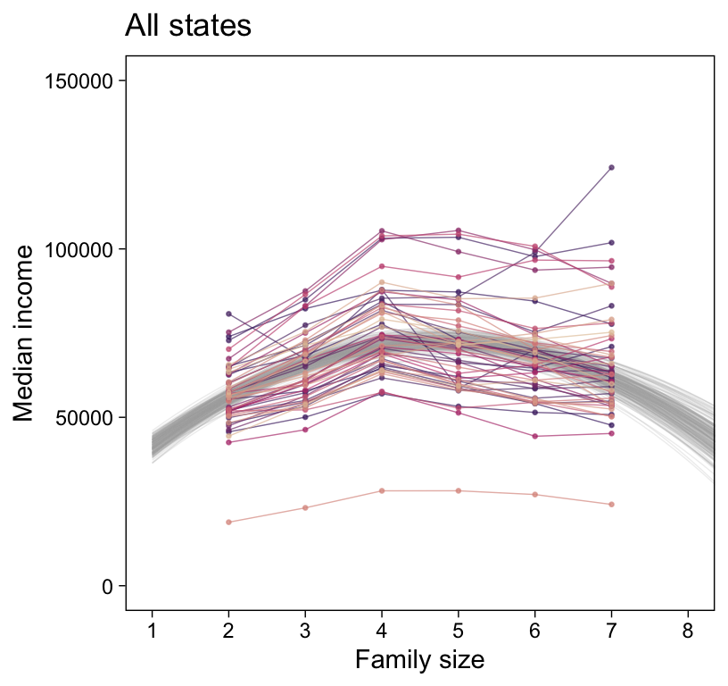
Like before, we’ll extract the group-level coefficients (i.e., those specific to the States) with the coef() function. And also like before, the coef() output will require a little wrangling.
# First collect and wrangle the draws for the State-level intercept and slopes
c <- rbind(coef(fit17.5, summary = FALSE)$State[, , "Intercept"],
coef(fit17.5, summary = FALSE)$State[, , "family_size_z"],
coef(fit17.5, summary = FALSE)$State[, , "Ifamily_size_zE2"]) |>
data.frame() |>
mutate(draw = rep(1:4000, times = 3),
param = rep(c("Intercept", "family_size_z", "Ifamily_size_zE2"), each = 4000)) |>
pivot_longer(cols = Alabama:Wyoming, names_to = "State") |>
pivot_wider(names_from = param, values_from = value) |>
# Let's go ahead and make the standardized-to-unstandardized conversions, here
mutate(b_0 = make_beta_0(zeta_0 = Intercept,
zeta_1 = family_size_z,
zeta_2 = Ifamily_size_zE2,
sd_x = sd_x,
sd_y = sd_y,
m_x = m_x,
m_y = m_y),
b_1 = make_beta_1(zeta_1 = family_size_z,
zeta_2 = Ifamily_size_zE2,
sd_x = sd_x,
sd_y = sd_y,
m_x = m_x),
b_2 = make_beta_2(zeta_2 = Ifamily_size_zE2,
sd_x = sd_x,
sd_y = sd_y)) |>
# We just want the first 25 states, from Alabama through Mississippi, so we'll `filter()`
filter(State <= "Mississippi")
str(c)tibble [100,000 × 8] (S3: tbl_df/tbl/data.frame)
$ draw : int [1:100000] 1 1 1 1 1 1 1 1 1 1 ...
$ State : chr [1:100000] "Alabama" "Alaska" "Arizona" "Arkansas" ...
$ Intercept : num [1:100000] 0.18275 1.17083 -0.00604 -0.35614 0.37869 ...
$ family_size_z : num [1:100000] 0.204 0.115 0.155 0.156 0.167 ...
$ Ifamily_size_zE2: num [1:100000] -0.508 -0.379 -0.346 -0.33 -0.341 ...
$ b_0 : num [1:100000] 9701 40914 25319 21772 31084 ...
$ b_1 : num [1:100000] 24827 18211 17065 16338 16931 ...
$ b_2 : num [1:100000] -2563 -1913 -1747 -1666 -1721 ...Now we’ll subset by n_lines, expand_grid() by FamilySize, and use the model formula to compute the expected MedianIncome values.
# How many posterior lines would you like?
n_lines <- 200
set.seed(17)
c <- c |>
group_by(State) |>
slice_sample(n = n_lines) |>
ungroup() |>
select(draw, State, b_0, b_1, b_2) |>
expand_grid(FamilySize = seq(from = 1, to = 9, length.out = 50)) |>
mutate(MedianIncome = b_0 + b_1 * FamilySize + b_2 * FamilySize^2)
head(c)# A tibble: 6 × 7
draw State b_0 b_1 b_2 FamilySize MedianIncome
<int> <chr> <dbl> <dbl> <dbl> <dbl> <dbl>
1 1970 Alabama 19338. 20364. -2169. 1 37533.
2 1970 Alabama 19338. 20364. -2169. 1.16 40091.
3 1970 Alabama 19338. 20364. -2169. 1.33 42534.
4 1970 Alabama 19338. 20364. -2169. 1.49 44862.
5 1970 Alabama 19338. 20364. -2169. 1.65 47074.
6 1970 Alabama 19338. 20364. -2169. 1.82 49170.Finally, we’re ready for the State-specific miniatures in Figure 17.7.
my_data |>
filter(State <= "Mississippi") |>
ggplot(aes(x = FamilySize, y = MedianIncome)) +
geom_line(data = c,
aes(group = draw),
alpha = 1/5, color = "grey67", linewidth = 1/4) +
geom_point(aes(color = State)) +
geom_line(aes(color = State)) +
scale_x_continuous("Family size", breaks = 1:8) +
scale_color_manual(values = beyonce_palette(41, n = 52, type = "continuous"), breaks = NULL) +
labs(y = "Median income",
subtitle = "Each State now has its own bundle of credible regression curves.") +
coord_cartesian(xlim = c(1, 8),
ylim = c(0, 150000)) +
theme(legend.position = "none") +
facet_wrap(~ State)
Magic! As our model coefficients proliferate, the fitted() approach from above starts to look more and more appetizing. Check it out for yourself.
Although “almost all of the posterior distribution [was] below \(\nu = 4\)” in the text (p. 500), the bulk of our \(\nu\) distribution spanned across much larger values.
as_draws_df(fit17.5) |>
ggplot(aes(x = nu)) +
stat_histinterval(point_interval = mode_hdi, .width = 0.95,
breaks = 40, color = bp[1], fill = bp[6],
normalize = "panels", slab_color = bp[5]) +
scale_x_continuous(expand = expansion(mult = c(0, 0.05))) +
scale_y_continuous(NULL, breaks = NULL) +
labs(x = NULL,
title = expression(Our~big~nu))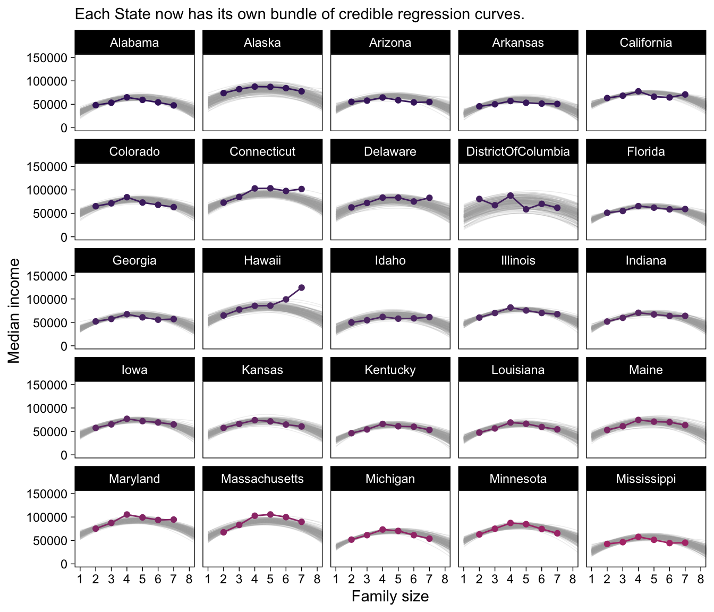
I’m guessing the distinction in our \(\nu\) distribution and that in the text is our use of the se() syntax in the brm() formula. If you have a better explanation, share it.
17.4.2 Further extensions.
Kruschke discussed the ease with which users of Bayesian software might specify nonlinear models. Check out Bürkner’s (2022b) vignette, Estimating non-linear models with brms, for more on the topic. Though I haven’t used it, I believe it is also possible to use the \(t\) distribution to model group-level variation in brms (see this GitHub discussion for details).
17.5 Procedure and perils for expanding a model
Across several chapters, we’ve already dipped our toes into posterior predictive checks. For more on the PPC “double dipping” issue, check out Gelman’s Discussion with Sander Greenland on posterior predictive checks or Simpson’s Touch me, I want to feel your data, which is itself connected to Gabry et al. (2019), Visualization in Bayesian workflow.
Session info
sessionInfo()R version 4.4.3 (2025-02-28)
Platform: aarch64-apple-darwin20
Running under: macOS Ventura 13.4
Matrix products: default
BLAS: /Library/Frameworks/R.framework/Versions/4.4-arm64/Resources/lib/libRblas.0.dylib
LAPACK: /Library/Frameworks/R.framework/Versions/4.4-arm64/Resources/lib/libRlapack.dylib; LAPACK version 3.12.0
locale:
[1] en_US.UTF-8/en_US.UTF-8/en_US.UTF-8/C/en_US.UTF-8/en_US.UTF-8
time zone: America/Chicago
tzcode source: internal
attached base packages:
[1] stats graphics grDevices utils datasets methods base
other attached packages:
[1] bayesplot_1.11.1 tidybayes_3.0.7 brms_2.22.0 Rcpp_1.0.14
[5] patchwork_1.3.0 beyonce_0.1 lubridate_1.9.3 forcats_1.0.0
[9] stringr_1.5.1 dplyr_1.1.4 purrr_1.0.4 readr_2.1.5
[13] tidyr_1.3.1 tibble_3.2.1 ggplot2_3.5.1 tidyverse_2.0.0
loaded via a namespace (and not attached):
[1] tidyselect_1.2.1 svUnit_1.0.6 farver_2.1.2
[4] loo_2.8.0 fastmap_1.1.1 TH.data_1.1-2
[7] tensorA_0.36.2.1 digest_0.6.37 estimability_1.5.1
[10] timechange_0.3.0 lifecycle_1.0.4 StanHeaders_2.32.10
[13] survival_3.8-3 magrittr_2.0.3 posterior_1.6.0
[16] compiler_4.4.3 rlang_1.1.5 tools_4.4.3
[19] utf8_1.2.4 yaml_2.3.8 knitr_1.49
[22] emo_0.0.0.9000 labeling_0.4.3 bridgesampling_1.1-2
[25] htmlwidgets_1.6.4 bit_4.0.5 curl_6.0.1
[28] pkgbuild_1.4.4 plyr_1.8.9 multcomp_1.4-26
[31] abind_1.4-8 withr_3.0.2 grid_4.4.3
[34] stats4_4.4.3 xtable_1.8-4 colorspace_2.1-1
[37] inline_0.3.19 emmeans_1.10.3 scales_1.3.0
[40] MASS_7.3-64 cli_3.6.4 mvtnorm_1.2-5
[43] crayon_1.5.3 rmarkdown_2.29 generics_0.1.3
[46] RcppParallel_5.1.7 rstudioapi_0.16.0 reshape2_1.4.4
[49] tzdb_0.4.0 rstan_2.32.6 splines_4.4.3
[52] assertthat_0.2.1 parallel_4.4.3 matrixStats_1.4.1
[55] vctrs_0.6.5 V8_4.4.2 Matrix_1.7-2
[58] sandwich_3.1-1 jsonlite_1.8.9 hms_1.1.3
[61] arrayhelpers_1.1-0 bit64_4.0.5 ggdist_3.3.2
[64] glue_1.8.0 codetools_0.2-20 distributional_0.5.0
[67] stringi_1.8.4 gtable_0.3.6 QuickJSR_1.1.3
[70] munsell_0.5.1 pillar_1.10.2 htmltools_0.5.8.1
[73] Brobdingnag_1.2-9 R6_2.6.1 vroom_1.6.5
[76] evaluate_1.0.1 lattice_0.22-6 backports_1.5.0
[79] rstantools_2.4.0 coda_0.19-4.1 gridExtra_2.3
[82] nlme_3.1-167 checkmate_2.3.2 mgcv_1.9-1
[85] xfun_0.49 zoo_1.8-12 pkgconfig_2.0.3